<!doctype html>
<html lang="en">
<head>
  <meta charset="utf-8">
  <meta name="viewport" content="width=device-width, initial-scale=1">
  <title>arxiv digest — 2026-07-17</title>
  <style>
:root {
  --bg: #ffffff;
  --fg: #1f2328;
  --muted: #59636e;
  --border: #d0d7de;
  --card: #f6f8fa;
  --link: #0969da;
}
body {
  max-width: 980px;
  margin: 0 auto;
  padding: 2rem 1rem 5rem;
  font-family: -apple-system, BlinkMacSystemFont, "Segoe UI", Helvetica, Arial, sans-serif;
  line-height: 1.55;
  color: var(--fg);
  background: var(--bg);
}
a { color: var(--link); }
img { max-width: 100%; height: auto; }
pre, code { background: var(--card); border-radius: 6px; }
pre { padding: 1rem; overflow-x: auto; }
blockquote { border-left: 4px solid var(--border); padding-left: 1rem; color: var(--muted); }
details { margin: 0.6rem 0; }
summary { cursor: pointer; font-weight: 600; }
.paper-figures-scroll {
  display: flex;
  gap: 1rem;
  overflow-x: auto;
  overscroll-behavior-x: contain;
  padding: 0.75rem 0.25rem 1rem;
  margin: 1rem 0 1.25rem;
  border-top: 1px solid var(--border);
  border-bottom: 1px solid var(--border);
  scroll-snap-type: x proximity;
}
.paper-figure-card {
  flex: 0 0 min(260px, 72vw);
  scroll-snap-align: start;
  background: var(--card);
  border: 1px solid var(--border);
  border-radius: 12px;
  padding: 0.55rem;
}
.paper-figure-card img {
  display: block;
  width: 100%;
  max-height: 240px;
  object-fit: contain;
  background: white;
  border-radius: 8px;
}
.paper-figure-caption {
  display: block;
  margin-top: 0.5rem;
  color: var(--muted);
  font-size: 0.85rem;
}
.figure-strip-hint {
  color: var(--muted);
  font-size: 0.9rem;
  margin-bottom: -0.3rem;
}
</style>
  <!-- MathJax: renders $...$ inline math and $$...$$ display math, plus
       \(...\) and \[...\]. Loaded from the official CDN; works offline
       once cached. Configured to skip code/pre blocks so arxiv IDs that
       look like dollar amounts don't get mangled. -->
  <script>
    window.MathJax = {
      tex: {
        inlineMath: [['$', '$'], ['\\(', '\\)']],
        displayMath: [['$$', '$$'], ['\\[', '\\]']],
        processEscapes: true,
        processEnvironments: true
      },
      options: {
        skipHtmlTags: ['script', 'noscript', 'style', 'textarea', 'pre', 'code'],
        ignoreHtmlClass: 'tex2jax_ignore',
        processHtmlClass: 'tex2jax_process'
      }
    };
  </script>
  <script id="MathJax-script" async
    src="https://cdn.jsdelivr.net/npm/mathjax@3/es5/tex-chtml.js"></script>
</head>
<body>
<header style="background-color: #333; color: white; padding: 15px; margin-bottom: 20px;">
  <h1 style="margin: 0; font-size: 24px;">
    <a href="https://ochelpan.github.io/arXiv_clean/" style="color: white; text-decoration: none;">Main</a>
  </h1>
</header>

<h1>Daily arXiv Report</h1>

<hr>
<p>
<a href="index.html">← Index</a>
 · <a href="papers_02.html">Next →</a>
</p>
<hr>

<h2>Papers 1–20</h2>
<p><a id="paper-2607.14056"></a></p>
<h3 id="acoustic-firewalls-analogue-gravity-perspective-on-the-amps-paradox"><a href="http://arxiv.org/abs/2607.14056v1">Acoustic Firewalls: Analogue Gravity Perspective on the AMPS Paradox</a></h3>
<p><strong>Authors:</strong> Nikolay S. Akintsov, Artyom P. Nevecheria, Stepan N. Andreev, Qing-Hua Qin<br>
<strong>Type:</strong> theory · <strong>Category:</strong> quantum gases · <strong>PDF:</strong> <a href="https://arxiv.org/pdf/2607.14056v1">https://arxiv.org/pdf/2607.14056v1</a><br>
<strong>Analysis basis:</strong> full PDF text, analyzed in chunks
<strong>Topic relevance:</strong> 🔥 <code>entanglement &amp; information structure</code> <strong>5/5</strong> · 🔥 <code>analog quantum simulation</code> <strong>4/5</strong> · <code>non-equilibrium dynamics</code> <strong>2/5</strong> · <code>non-equilibrium universality</code> <strong>2/5</strong> · <code>Keldysh / 2PI / non-Gaussian methods</code> <strong>1/5</strong> · <code>correlated / nonlocal dissipation</code> <strong>1/5</strong> · <code>driven-dissipative phase transition</code> <strong>1/5</strong> · <code>methods for driven-dissipative</code> <strong>1/5</strong></p>
<div class="figure-strip-hint">↔ Scroll figures horizontally</div>
<div class="paper-figures-scroll">
<figure class="paper-figure-card">
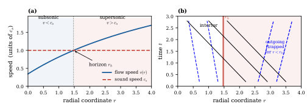
<figcaption class="paper-figure-caption"><b>Fig 1.</b> FIG. 1. Sonic horizon. (a) Flow speed v(r) crosses the sound speed cs at the horizon rh, separating subsonic (v &lt; cs) and supersonic (v &gt; cs) regions. (b) Ray diagram: ingoing null rays (solid) cross rh; outgoing rays (dashed) are trapped for r &lt; rh, the acoustic analogue of the interior.</figcaption>
</figure>
<figure class="paper-figure-card">
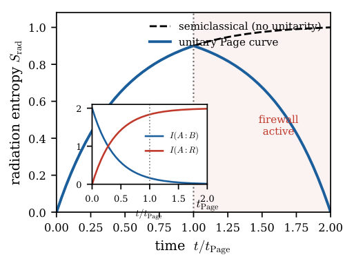
<figcaption class="paper-figure-caption"><b>Fig 2.</b> FIG. 2. Analogue Page curve. Semiclassical entropy (dashed) grows monotonically; unitarity (solid) turns it over at tPage. Shaded: post-Page regime where the acoustic firewall is ac- tive. Inset: mutual informations I(A:B) and I(A:R) cross at tPage [Eqs. (4)–(5)].</figcaption>
</figure>
<figure class="paper-figure-card">
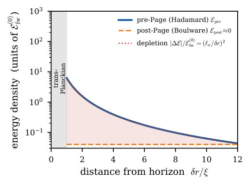
<figcaption class="paper-figure-caption"><b>Fig 3.</b> FIG. 3. Near-horizon energy density (units of E(0) fw ). Pre-Page (Hadamard) the phonon atmosphere is Tolman-blueshifted, Epre ∝(δr)−2 (blue); post-Page the Boulware-like state is depleted, Epost ≈0 (orange). The acoustic firewall is this depletion |∆E|/E(0) fw = (ℓκ/δr)2 (red), measured differentially across tPage. Grey: δr &lt; ξ, where the acoustic metric fails.</figcaption>
</figure>
<figure class="paper-figure-card">
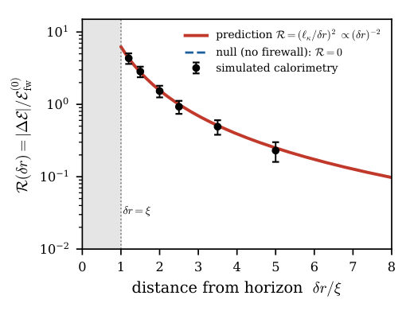
<figcaption class="paper-figure-caption"><b>Fig 4.</b> FIG. 4. Proposed signature. Predicted depletion ratio R(δr) = (ℓκ/δr)2 ∝(δr)−2 (red) versus the no-firewall null R = 0 (dashed). Points with error bars: simulated differen- tial phonon calorimetry for 87Rb (fixed-seed synthetic data, not measurements). Grey: healing-length cutoff.</figcaption>
</figure>
</div>

<p><strong>Summary.</strong> The paper translates the theoretical AMPS paradox concerning black hole information loss into an analogue system using phonons in a Bose-Einstein condensate. By applying entanglement principles across an artificial sonic horizon, the authors predict that post-Page time unitarity forces a measurable depletion of phonon energy density. This predicted signal, scaling as $(\ell_\kappa/\delta r)^2$, offers a concrete, falsifiable test for quantum gravity concepts in cold atom experiments.</p>
<p><strong>Why it may be interesting.</strong> This work directly applies advanced concepts of quantum information (entanglement monogamy) and black hole physics into a highly controllable, experimentally accessible platform like BECs, providing a concrete testable prediction for AMO physicists.</p>
<details>
<summary>Detailed structure</summary>
<p><strong>Main problem.</strong> The paper addresses the AMPS paradox, which highlights an inconsistency between unitarity, local physics at the horizon, and smooth vacuum evolution during black hole evaporation.</p>
<p><strong>Main result.</strong> It predicts a falsifiable signature—a specific depletion ratio $R(\delta r) \propto (\ell_\kappa/\delta r)^2$ in phonon energy density—that should appear after an analogue Page time in a BEC.</p>
<p><strong>Method.</strong> The authors transcribe the AMPS argument to an acoustic system, using entanglement monogamy identities and calculating differences between stress tensors for different vacuum states (Hadamard vs. Boulware-like).</p>
<p><strong>Model / system.</strong> The model uses analogue gravity realized via a sonic horizon in a Bose-Einstein condensate (BEC), where linearized phonons obey the Klein-Gordon equation in an acoustic metric.</p>
<p><strong>Key observables.</strong> A dimensionless, differential phonon-calorimetry signal $R(\delta r) = |\Delta\mathcal{E}|/\mathcal{E}^{(0)}$, predicted to scale as $(\ell_\kappa/\delta r)^2$.</p>
<p><strong>Important parameters / regimes.</strong> Healing length ($\xi$), surface gravity ($\kappa$), and the analogue Page time ($t_{	ext{Page}}$).</p>
<p><strong>Assumptions / limitations.</strong> The analogy is purely kinematic, meaning it does not involve true back-reaction or solving Einstein's equations; detection requires averaging over many runs.</p>
<p><strong>Figures summary.</strong> Figures illustrate the sonic horizon structure, entropy evolution crossing a Page time analogue, and plot the predicted depletion ratio $R(\delta r) \propto (\ell_\kappa/\delta r)^2$ against null results.</p>
<p><strong>Paper structure.</strong> The paper builds from the AMPS paradox to its acoustic analogy, deriving the necessary entanglement identities, calculating the difference in renormalized stress tensors between pre- and post-Page states, and finally presenting the measurable depletion signal.</p>
</details>
<details>
<summary>Abstract</summary>
<p>The monogamy of quantum entanglement, applied by Almheiri-Marolf-Polchinski-Sully (AMPS) to black holes, obstructs a smooth horizon vacuum after the Page time. We transcribe this argument to Hawking-like phonon radiation from a sonic horizon in the Unruh acoustic metric. An exact purity identity shows that post-Page-time unitarity forces the entanglement between an outgoing phonon and its interior partner to vanish, selecting a non-Hadamard (Boulware-like) phonon state, which we define as an acoustic firewall. Its renormalized stress tensor differs from the smooth state by a constant, negative near-horizon flux, and the thermal-atmosphere energy density it removes, measured by a static calorimeter, grows as $(δr)^{-2}$ in the radial coordinate toward the horizon (singular in the free-fall frame), cut off at the healing length. The construction is kinematic and does not resolve the information paradox; it yields one concrete, falsifiable prediction: a differential phonon-calorimetry signal $\mathcal{R}(δr)=|Δ\mathcal{E}|/\mathcal{E}^{(0)}\to(\ell_κ/δr)^{2}$, present only after the analogue Page time in a Bose-Einstein condensate.</p>
</details>
<p><sub><a href="#top">↑ back to top</a></sub></p>

<p><a id="paper-2607.13391"></a></p>
<h3 id="the-nonequilibrium-statistical-mechanics-of-markov-interacting-particles"><a href="http://arxiv.org/abs/2607.13391v1">The nonequilibrium statistical mechanics of Markov interacting particles</a></h3>
<p><strong>Authors:</strong> Dalton A R Sakthivadivel<br>
<strong>Type:</strong> theory · <strong>Category:</strong> statistical mechanics · <strong>PDF:</strong> <a href="https://arxiv.org/pdf/2607.13391v1">https://arxiv.org/pdf/2607.13391v1</a><br>
<strong>Analysis basis:</strong> full PDF text, analyzed in chunks
<strong>Topic relevance:</strong> 🔥 <code>Keldysh / 2PI / non-Gaussian methods</code> <strong>4/5</strong> · 🔥 <code>entanglement &amp; information structure</code> <strong>4/5</strong> · <code>correlated / nonlocal dissipation</code> <strong>3/5</strong> · <code>driven-dissipative phase transition</code> <strong>3/5</strong> · <code>methods for driven-dissipative</code> <strong>3/5</strong> · <code>non-equilibrium dynamics</code> <strong>3/5</strong> · <code>non-equilibrium universality</code> <strong>2/5</strong> · <code>quantum measurements</code> <strong>2/5</strong> · <code>Kondo &amp; dissipative impurity</code> <strong>1/5</strong> · <code>measurement-induced transitions</code> <strong>1/5</strong> · <code>scars &amp; prethermalization</code> <strong>1/5</strong></p>
<div class="figure-strip-hint">↔ Scroll figures horizontally</div>
<div class="paper-figures-scroll">
<figure class="paper-figure-card">
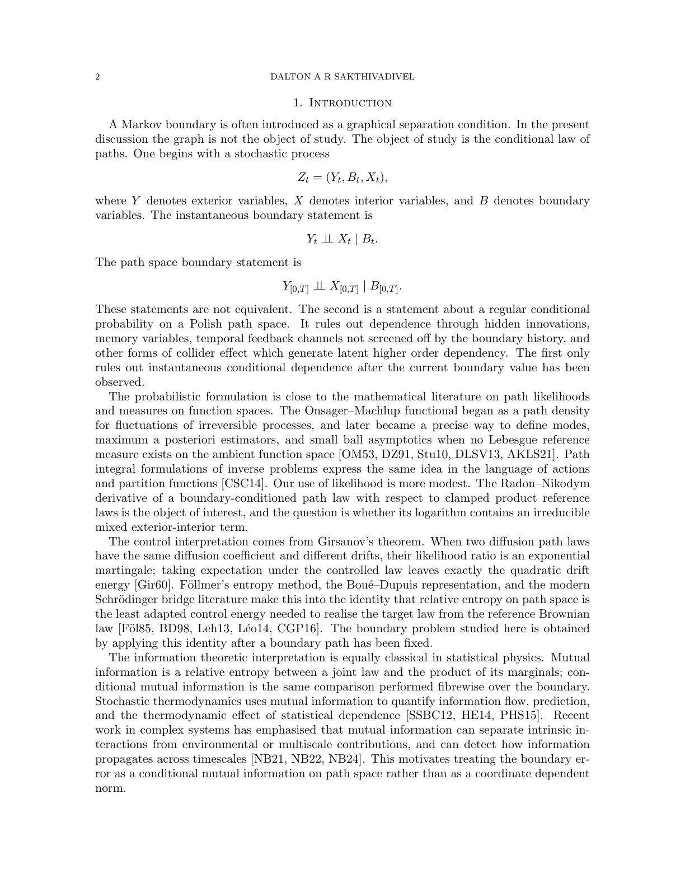
<figcaption class="paper-figure-caption"><b>Fig 1.</b> Low-resolution page preview, page 2</figcaption>
</figure>
<figure class="paper-figure-card">
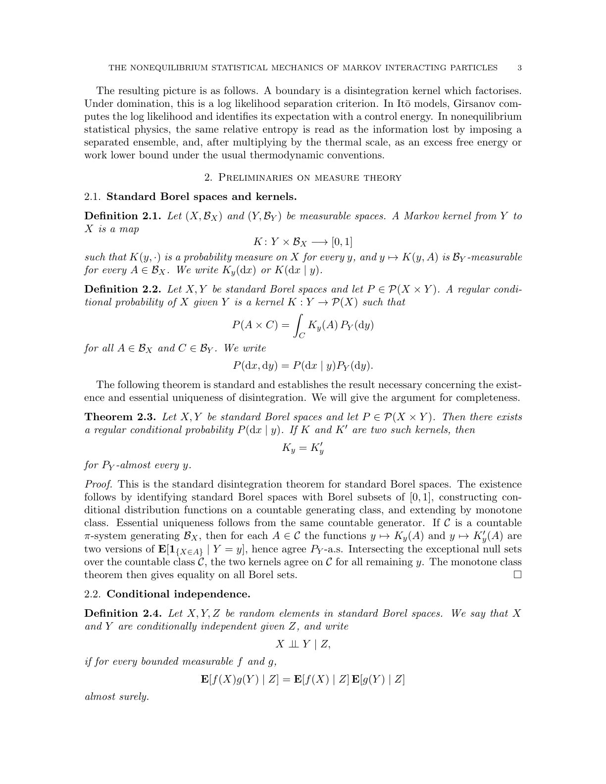
<figcaption class="paper-figure-caption"><b>Fig 2.</b> Low-resolution page preview, page 3</figcaption>
</figure>
<figure class="paper-figure-card">
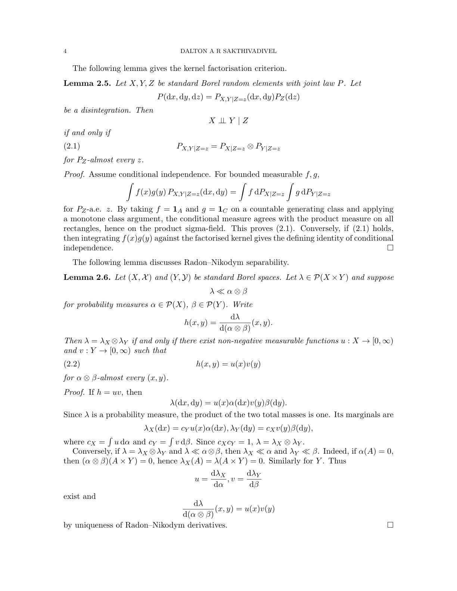
<figcaption class="paper-figure-caption"><b>Fig 3.</b> Low-resolution page preview, page 4</figcaption>
</figure>
<figure class="paper-figure-card">
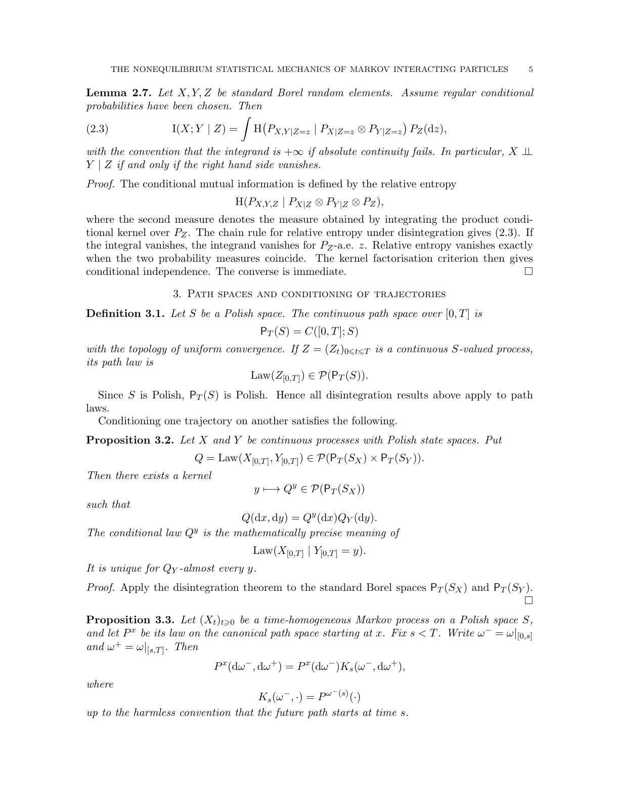
<figcaption class="paper-figure-caption"><b>Fig 4.</b> Low-resolution page preview, page 5</figcaption>
</figure>
<figure class="paper-figure-card">
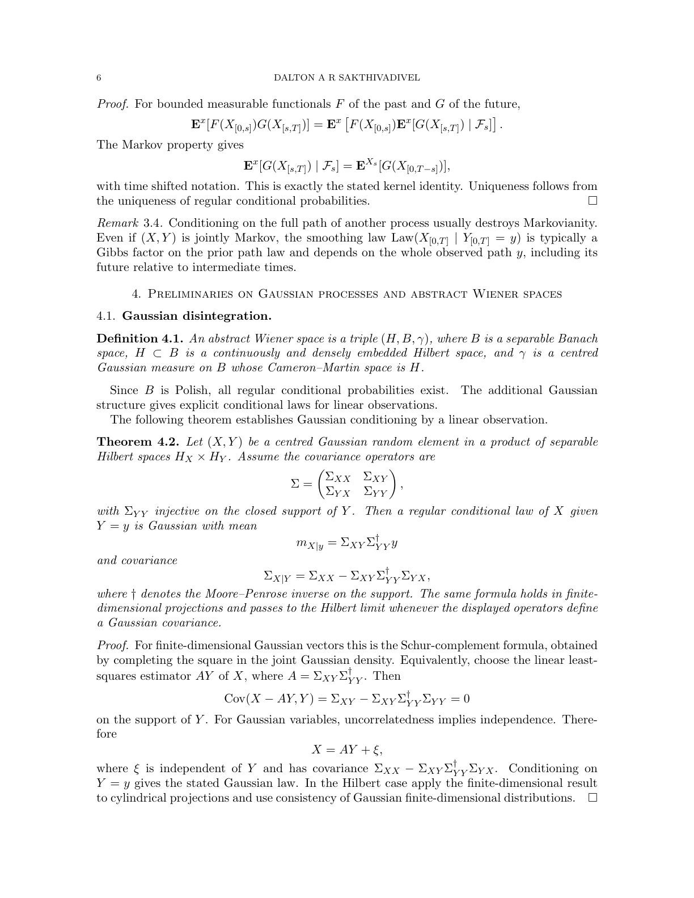
<figcaption class="paper-figure-caption"><b>Fig 5.</b> Low-resolution page preview, page 6</figcaption>
</figure>
</div>

<p><strong>Summary.</strong> This paper develops the mathematical machinery to analyze when the conditional probability law of coupled stochastic processes factorizes given an intermediate 'boundary' path. It establishes that factorization is equivalent to specific conditions on likelihood ratios and mutual information, providing a unified language applicable across various physical models from general diffusions to quantum-inspired systems.</p>
<p><strong>Why it may be interesting.</strong> It provides a rigorous mathematical framework connecting concepts like Markov boundaries, information theory (mutual information), and stochastic control energy in non-equilibrium settings, which is crucial for understanding open quantum systems dynamics.</p>
<details>
<summary>Detailed structure</summary>
<p><strong>Main problem.</strong> The central problem is determining the necessary and sufficient conditions for the conditional law of histories (paths) to factorize when conditioning a joint stochastic process on an intermediate 'boundary' path.</p>
<p><strong>Main result.</strong> Factorization of the boundary-conditioned path law is equivalent to specific mathematical conditions, such as multiplicative separability of the Radon–Nikodym derivative or vanishing mixed covariance terms in specialized regimes.</p>
<p><strong>Method.</strong> The analysis employs advanced measure theory, utilizing Girsanov's theorem for likelihood ratio calculations and information-theoretic tools like conditional mutual information and relative entropy.</p>
<p><strong>Model / system.</strong> The study considers coupled stochastic systems decomposed into exterior ($Y$), boundary ($B$), and interior ($X$) variables, modeled by general continuous processes, including Itô diffusions.</p>
<p><strong>Key observables.</strong> Path likelihoods (Radon–Nikodym derivatives), conditional mutual information $I(X; Y | B)$, and the quadratic control energy derived from log-likelihood expectations.</p>
<p><strong>Important parameters / regimes.</strong> The time interval $[0, T]$, the structure of the coupling between variables ($Y, X$), and the nature of the conditioning path $B$.</p>
<p><strong>Assumptions / limitations.</strong> Assumes Polish state spaces to guarantee the existence of regular conditional probabilities; relies on domination by product reference laws for factorization theorems.</p>
<p><strong>Paper structure.</strong> The paper builds from defining the core object (regular conditional probability on a path space) to establishing necessary and sufficient conditions for its factorization, providing equivalent criteria across different mathematical frameworks (e.g., general Borel laws vs. Itô diffusions).</p>
</details>
<details>
<summary>Abstract</summary>
<p>We consider coupled stochastic systems decomposed into exterior, boundary, and interior variables, with the boundary variables sometimes carrying the directed structure of a sensor and actuator. The central question is when the conditional law of histories factorises, and how this path space statement is detected by log likelihoods, by Girsanov changes of measure, and by information theoretic quantities used in nonequilibrium statistical physics. The basic object is a regular conditional probability on a path space. Under domination by clamped reference laws, the boundary property becomes multiplicative separation of a Radon--Nikodym derivative, or equivalently additive separation of a path log likelihood. For Itō diffusions this log likelihood is computed by Girsanov's theorem; its expectation is the quadratic control energy appearing in the Föllmer entropy identity and in the stochastic control formulation of Schrödinger bridge problems. When exact factorisation fails, the remaining coupling is measured by conditional mutual information, namely the relative entropy between the true boundary-conditioned path law and the product of its conditional marginals. This gives a common language for boundary screening, path likelihood inference, controlled changes of path law, and the thermodynamic value of mutual information.</p>
</details>
<p><sub><a href="#top">↑ back to top</a></sub></p>

<p><a id="paper-2607.13572"></a></p>
<h3 id="quantum-classical-crossover-in-finite-spin-12-rings-with-dzyaloshinsky-moriya-interaction"><a href="http://arxiv.org/abs/2607.13572v1">Quantum-classical crossover in finite spin-1/2 rings with Dzyaloshinsky-Moriya interaction</a></h3>
<p><strong>Authors:</strong> Raúl Sánchez Galán, Robert Wieser<br>
<strong>Type:</strong> theory · <strong>Category:</strong> strongly correlated electrons · <strong>PDF:</strong> <a href="https://arxiv.org/pdf/2607.13572v1">https://arxiv.org/pdf/2607.13572v1</a><br>
<strong>Analysis basis:</strong> full PDF text, analyzed in chunks
<strong>Topic relevance:</strong> 🔥 <code>methods for driven-dissipative</code> <strong>4/5</strong> · <code>Keldysh / 2PI / non-Gaussian methods</code> <strong>3/5</strong> · <code>analog quantum simulation</code> <strong>3/5</strong> · <code>correlated / nonlocal dissipation</code> <strong>3/5</strong> · <code>driven-dissipative phase transition</code> <strong>3/5</strong> · <code>entanglement &amp; information structure</code> <strong>3/5</strong> · <code>non-equilibrium dynamics</code> <strong>2/5</strong> · <code>non-equilibrium universality</code> <strong>2/5</strong> · <code>Kondo &amp; dissipative impurity</code> <strong>1/5</strong> · <code>exotic spin models in light-matter</code> <strong>1/5</strong> · <code>scars &amp; prethermalization</code> <strong>1/5</strong></p>
<div class="figure-strip-hint">↔ Scroll figures horizontally</div>
<div class="paper-figures-scroll">
<figure class="paper-figure-card">
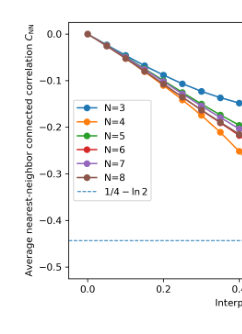
<figcaption class="paper-figure-caption"><b>Fig 1.</b> Figure 1: Average nearest-neighbor connected correlation CNN as a function of the interpolation parameter β for rings with N = 3, 4, 5, 6, 7, 8 spins. For small values of β, the connected correlations are close to zero, indicating that the sys- tem approaches a nearly separable product state consistent with the mean-field description. As β increases, the magnitude of the correlations grows and CNN becomes increasingly negative, reflecting the development of antiferromagnetic quantum correlations. The even rings generally develop stronger negative cor- relations, while the odd rings are affected by geometrical frustration.</figcaption>
</figure>
<figure class="paper-figure-card">
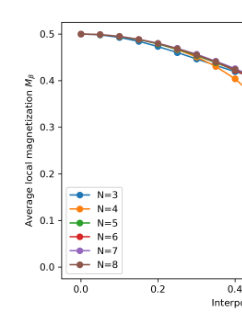
<figcaption class="paper-figure-caption"><b>Fig 2.</b> Figure 2: Average local magnetization Mβ as a function of the interpolation parameter β for rings with N = 3, 4, 5, 6, 7, 8 spins. The magnetization gener- ally decreases as β increases, reflecting the suppression of classical local spin order in the correlated quantum regime. The sharper drops observed for even N reflect the absence of geometrical frustration, while the odd rings retain a larger residual magnetization because a perfect alternating antiferromagnetic arrangement is incompatible with the periodic boundary condition.</figcaption>
</figure>
<figure class="paper-figure-card">
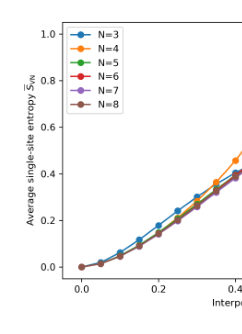
<figcaption class="paper-figure-caption"><b>Fig 3.</b> Figure 3: Average single-site von Neumann entropy SVN as a function of the interpolation parameter β for rings with N = 3, 4, 5, 6, 7, 8. The entropy is small in the mean-field regime and increases as the dynamics approaches the correlated quantum regime. The even rings show the largest entropy increase, consistent with the stronger suppression of their local magnetization.</figcaption>
</figure>
</div>

<p><strong>Summary.</strong> This work explores the transition between quantum and classical physics in spin chains using an interpolating Hamiltonian. By analyzing observables like magnetization and entropy, the authors quantify how genuine quantum correlations (captured by connected terms) stabilize the system compared to mean-field approximations. This provides a quantitative framework for understanding decoherence effects in condensed matter models.</p>
<p><strong>Why it may be interesting.</strong> The use of a controlled interpolation parameter $\beta$ to bridge quantum dynamics (where correlations matter) and classical/mean-field descriptions is highly relevant for understanding open quantum systems where environmental coupling drives decoherence.</p>
<details>
<summary>Detailed structure</summary>
<p><strong>Main problem.</strong> The study investigates the quantum-classical crossover behavior in finite spin-1/2 rings subjected to Heisenberg exchange, Dzyaloshinsky-Moriya (DM) interaction, and an external magnetic field.</p>
<p><strong>Main result.</strong> The parameter $\beta$ interpolates between a fully correlated quantum regime ($\beta=1$) and a product-state mean-field limit ($\beta=0$), showing that quantum correlations significantly modify observables like magnetization and entropy.</p>
<p><strong>Method.</strong> The analysis employs an interpolating Hamiltonian $\hat{H}_\beta$ solved using the dissipative Gisin–Schrödinger dynamics, which is analyzed both in spectral decomposition (quantum) and via numerical methods (mean-field).</p>
<p><strong>Model / system.</strong> The system is a finite ring of $N$ spin-$1/2$ particles. The Hamiltonian includes nearest-neighbor Heisenberg exchange ($J$), DM interaction ($\vec{D}$), and a Zeeman term, controlled by the interpolation parameter $\beta$.</p>
<p><strong>Key observables.</strong> Local magnetization ($M_\beta$), connected spin correlations, single-site von Neumann entropy ($S_{\text{VN}}$), and the saturation field ($B_c$).</p>
<p><strong>Important parameters / regimes.</strong> The crossover parameter $\beta \in [0, 1]$, the ring size $N$, and the external magnetic field $B$.</p>
<p><strong>Assumptions / limitations.</strong> For $\beta < 1$, the state-dependent Hamiltonian loses the simple spectral decomposition available in the purely quantum case ($\beta=1$).</p>
<p><strong>Figures summary.</strong> Figure 1 shows connected correlations growing negatively with increasing $\beta$; Figure 2 demonstrates that magnetization decreases as $\beta$ increases; and Figure 3 illustrates entropy changes.</p>
<p><strong>Paper structure.</strong> The paper first defines the interpolating Hamiltonian, then analyzes the dynamics in the purely quantum limit ($\beta=1$) using spectral methods. It contrasts this with the mean-field limit ($\beta=0$), before analyzing the crossover behavior across $\beta$ and calculating critical fields like $B_c$.</p>
</details>
<details>
<summary>Abstract</summary>
<p>We study finite spin-$\tfrac12$ rings with nearest-neighbor Heisenberg exchange, Dzyaloshinsky--Moriya interaction, and an external magnetic field. We introduce an interpolation parameter between the fully quantum Hamiltonian and a state-dependent mean-field description. Using dissipative Gisin--Schrödinger dynamics, we analyze the resulting quantum--classical crossover through local magnetization, connected spin correlations, single-site entropy, and the saturation field of the fully polarized state.</p>
</details>
<p><sub><a href="#top">↑ back to top</a></sub></p>

<p><a id="paper-2607.13301"></a></p>
<h3 id="precision-quantum-simulation-of-magnon-spectra-and-interactions"><a href="http://arxiv.org/abs/2607.13301v1">Precision quantum simulation of magnon spectra and interactions</a></h3>
<p><strong>Authors:</strong> Trond I. Andersen, Nikita Astrakhantsev, Jeronimo Martinez, Will Morong, Johannes Motruk, Dario Rossi, Brayden Ware, Bryce Kobrin, Weijie Wu, Elizabeth Bennewitz, Manuel Rudolph, Tom Westerhout, Amira Abbas, Rajeev Acharya, Laleh Aghababaie Beni, Ross Alcaraz, Sayra Alcaraz, Markus Ansmann, Frank Arute, Kunal Arya, Walt Askew, Juan Atalaya, Christopher Ayala, Ryan Babbush, Brian Ballard, Joseph Bardin, Hector Bates, Andreas Bengtsson, Majid Bigdeli Karimi, Alexander Bilmes, Simon Bilodeau, Felix Borjans, Alexandre Bourassa, Jenna Bovaird, Dylan Bowers, Leon Brill, Peter Brooks, Michael Broughton, David Browne, Brett Buchea, Bob Buckley, Tim Burger, Brian Burkett, Jamal Busnaina, Nicholas Bushnell, Jonas Bylander, Anthony Cabrera, Juan Campero, Hung-Shen Chang, Silas Chen, Zijun Chen, Ben Chiaro, Liang-Ying Chih, Agnetta Cleland, Bryan Cochrane, Matt Cockrell, Josh Cogan, Paul Conner, Tom Connolly, Harold Cook, Rodrigo Cortinas, William Courtney, Alexander Crook, Benjamin Curtin, Adam Dally, Sayan Das, Martin Damyanov, Dripto Debroy, Himadri Dey, Stijn de Graaf, Laura De Lorenzo, Sean Demura, Lucia De Rose, Agustin Di Paolo, Leon Ding, Howard Dobbs, Paul Donohoe, Ebru Dogan, Ilya Drozdov, Andrew Dunsworth, Rasmus Edholm, Valerie Ehimhen, Alec Eickbusch, Aviv Elbag, Lior Ella, Mahmoud Elzouka, David Enriquez, Catherine Erickson, Lara Faoro, Vinicius Ferreira, Marcos Flores, Leslie Flores Burgos, Sam Fontes, Ebrahim Forati, Jeremiah Ford, Brooks Foxen, Masaya Fukami, Alan Fung, Lenny Fuste, Suhas Ganjam, Gonzalo Garcia, Christopher Garrick, Robert Gasca, Helge Gehring, Robert Geiger, Élie Genois, William Giang, Dar Gilboa, James Goeders, Edward Gonzales, Raja Gosula, Alejandro Grajales Dau, Dietrich Graumann, Joel Grebel, Alex Greene, Jonathan Gross, Jose Guerrero, Tan Ha., Steve Habegger, Tanner Hadick, Ali Hadjikhani, Michael Hamilton, Monica Hansen, Matthew Harrigan, Sean Harrington, Jeanne Hartshorn, Stephen Heslin, Paula Heu, Oscar Higgott, Reno Hiltermann, Jeremy Hilton, Hsin-Yuan Huang, Michael Hucka, Christopher Hudspeth, Ashley Huff, William Huggins, Aditya Jayaraman, Evan Jeffrey, Shaun Jevons, Zhang Jiang, Xiaoxuan Jin, Cody Jones, Chaitali Joshi, Kelsey Josund, Pavol Juhas, Andreas Kabel, Bharath Kannan, Hui Kang, Kiseo Kang, Amir Karamlou, Ryan Kaufman, Tanuj Khattar, Mostafa Khezri, Seon Kim, Paul Klimov, Can Knaut, Alexander Korotkov, Fedor Kostritsa, John Mark Kreikebaum, Ryuho Kudo, Arun Kumar, Ben Kueffler, Vladislav Kurilovich, Vitali Kutsko, Nathan Lacroix, Tiano Lange-Dei, Brandon Langley, Pavel Laptev, Kim-Ming Lau, Emma Leavell, Loïck Le Guevel, Justin Ledford, Joy Lee, Kenny Lee, Brian Lester, Wendy Leung, Matthew Lloyd, Lily Li, Wing Li, Ming Li, Alexander Lill, Mike Lindmark, William Livingston, Aditya Locharla, Erik Lucero, Daniel Lundahl, Aaron Lunt, Sid Madhuk, Donald Macaskill, Aniket Maiti, Ashley Maloney, Salvatore Mandra, Leigh Martin, Orion Martin, Eric Mascot, Paul Masih Das, Anselme Massimino, Melvin Mathews, Cameron Maxfield, Jarrod McClean, Matthew McEwen, Seneca Meeks, Anthony Megrant, Tim Menke, Kevin Miao, Zlatko Minev, Reza Molavi, Sebastian Molina, Shirin Montazeri, Akira Nakamura, Charles Neill, Konstantin Nesterov, Michael Newman, Roselle Ngaloy, Anthony Nguyen, Murray Nguyen, Chia-Hung Ni, Murphy Niu, Nicholas Noll, Sergey Novikov, Logan Oas, Ricky Oliver, Will Oliver, Raymond Orosco, Kristoffer Ottosson, Alice Pagano, Manan Patel, Sherman Peek, David Peterson, Alex Pizzuto, Thomas Plumb-Reyes, Elias Portoles, Rebecca Potter, Orion Pritchard, Sam Probst, Michael Qian, Chris Quintana, Matthew Rakher, Arpit Ranadive, Ganesh Ramachandran, Armin Razavi, Matthew Reagor, Rachel Resnick, David Rhodes, Daniel Riley, Gabrielle Roberts, Roberto Rodriguez, Emma Ropes, Eliott Rosenberg, Emma Rosenfeld, Dario Rosenstock, Elizabeth Rossi, Pedram Roushan, David Rower, Robert Salazar, Kannan Sankaragomathi, Murat Sarihan, Kevin Satzinger, Max Schaefer, Sebastian Schroeder, Henry Schurkus, Aria Shahingohar, Michael Shearn, Aaron Shorter, Shvarts Vladimir, Vlad Sivak, Spencer Small, W. Clarke Smith, David Sobel, Barrett Spells, Sofia Springer, George Sterling, Scott Stonemeyer, John Su, Jordan Suchard, Youngkyu Sung, Aaron Szasz, Alex Sztein, Tomoyuki Tanaka, Madeline Taylor, Jothi Thiruraman, Douglas Thor, Brandur Thorgrimsson, Dogan Timucin, Eifu Tomita, Alfredo Torres, M. Mert Torunbalci, Hao Tran, Abeer Vaishnav, Justin Vargas, Gopinath Vasalamarri, Sergey Vdovichev, Guifre Vidal, Benjamin Villalonga, Meghan Voorhees, Steven Waltman, Jonathan Waltz, Shannon Wang, Danni Wang, James Watson, Yonghua Wei, Travis Weidel, Theodore White, Kristi Wong, Bryan Woo, Christopher Wood, Maddy Woodson, Cheng Xing, Z. Jamie Yao, Ping Yeh, Bicheng Ying, Juhwan Yoo, Noureldin Yosri, Elliot Young, Grayson Young, Adam Zalcman, Ran Zhang, Yaxing Zhang, Yiqing Zhou, Ningfeng Zhu, Nicholas Zobrist, Zhenjie Zou, Sergio Boixo, Yu Chen, Julian Kelly, Hartmut Neven, Vadim Smelyanskiy, Dvir Kafri, L. B. Ioffe, Kostyantyn Kechedzhi, Xiao Mi, Dmitry Abanin<br>
<strong>Type:</strong> both · <strong>Category:</strong> numerical methods · <strong>PDF:</strong> <a href="https://arxiv.org/pdf/2607.13301v1">https://arxiv.org/pdf/2607.13301v1</a><br>
<strong>Analysis basis:</strong> full PDF text, analyzed in chunks
<strong>Topic relevance:</strong> 🔥 <code>analog quantum simulation</code> <strong>4/5</strong> · 🔥 <code>methods for driven-dissipative</code> <strong>4/5</strong> · <code>QC/QI experiment</code> <strong>3/5</strong> · <code>exotic spin models in light-matter</code> <strong>3/5</strong> · <code>spintronics-quantum-optics interface</code> <strong>3/5</strong> · <code>non-equilibrium dynamics</code> <strong>2/5</strong> · <code>Keldysh / 2PI / non-Gaussian methods</code> <strong>1/5</strong> · <code>correlated / nonlocal dissipation</code> <strong>1/5</strong> · <code>driven-dissipative phase transition</code> <strong>1/5</strong> · <code>entanglement &amp; information structure</code> <strong>1/5</strong> · <code>non-equilibrium universality</code> <strong>1/5</strong> · <code>quantum measurements</code> <strong>1/5</strong></p>
<div class="figure-strip-hint">↔ Scroll figures horizontally</div>
<div class="paper-figures-scroll">
<figure class="paper-figure-card">
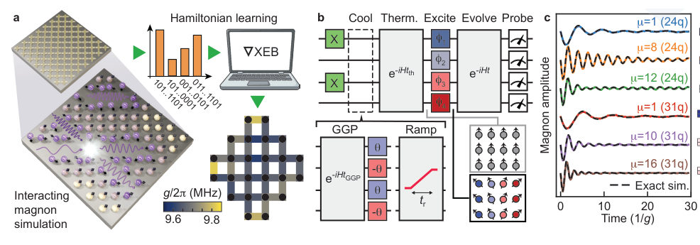
<figcaption class="paper-figure-caption"><b>Fig 1.</b> FIG. 1. High-precision magnon simulation via Hamiltonian learning and interleaved analog-digital circuits. a, A 97-qubit superconducting Willow processor is used to simulate interacting magnons. We learn its Hamiltonian in sub-patches of 24 qubits by optimizing overlap with the bitstring distribution. Bottom right: example of learned XY -couplings. b, Circuit schematic for magnon simulations. The magnet is cooled (dashed box) using either a global gate protocol (GGP) or adiabatic ramps. Following thermalization under analog evolution, digital Z-gates are injected to excite specific magnon modes (spin schematics pre- and post-excitation on bottom right), before turning the analog evolution...</figcaption>
</figure>
<figure class="paper-figure-card">
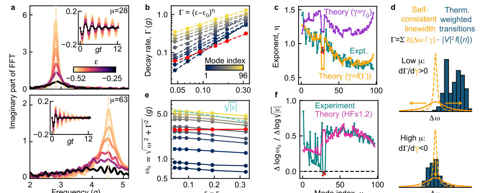
<figcaption class="paper-figure-caption"><b>Fig 2.</b> FIG. 3. Temperature dependence of magnon decay rate and resonance frequency. a, Magnon response for modes 28 (top) and 63 (bottom) in Fourier (main) and time-domain (inset). Mode 63 shows red-shift with increasing ε. b, Dependence of decay rate on energy elevation above ground state. Dashed lines show power-law fits. The data is collected using the same parallel excitation scheme as in Fig. 2. Red indicates corner mode. c, Power-law exponent, η, extracted from b (teal). The decrease below unity is not captured theoretically when assuming constant linewidths, γ = γ0 (purple), pointing to the important effect of self-consistent broadening effects (yellow). d, The temperature dependence of Γ...</figcaption>
</figure>
<figure class="paper-figure-card">
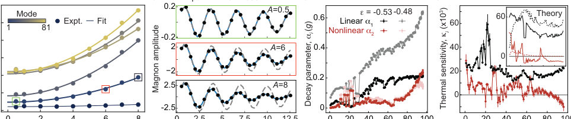
<figcaption class="paper-figure-caption"><b>Fig 3.</b> FIG. 4. Nonlinear magnon decay pathways. a, The decay rate scales roughly as A2, consistent with a nonlinear self- scattering process. Points indicate experimental data, and lines are quadratic fits. Every sixteenth mode in a 97-qubit system is shown. b, Examples of fits to the nonlinear decay equation (Eq. 2) for mode 17 (corresponding points boxed in a). We collectively fit (solid lines) the data (markers) at all amplitudes. The linear decay component (dashed lines) describes the low-amplitude data well, but underestimates the decay for higher A. For clarity, every other time point is displayed. c, Fit values for the linear and nonlinear decay parameters, α1 and α2. Dark and light lines...</figcaption>
</figure>
<figure class="paper-figure-card">
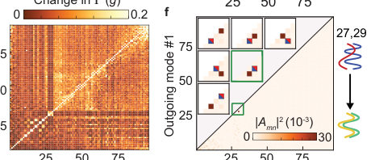
<figcaption class="paper-figure-caption"><b>Fig 4.</b> FIG. 5. Directly probing magnon scattering via col- lision experiments. a, Equal-time pump-probe measure- ments show how a high-amplitude pump mode (red; A = 4) impacts the decay rate of low-A probe modes (blue; A = 0.5). We use four measurements, including alternating signs of the probe, and comparison with and without pumping. For ef- ficiency, we excite 24 probe modes in parallel (more than in other experiments because we focus on the differential signal with and without pumping, which is more robust). b, Re- sponse of mode 50 without pumping (purple), compared with pumping of corner mode 29 (blue) and bulk mode 80 (green). The latter has substantially stronger effect. c, Pump-induced...</figcaption>
</figure>
</div>

<p><strong>Summary.</strong> The research reports on achieving high-precision quantum simulation of interacting magnon dynamics in a 2D XY magnet using superconducting qubits. By combining analog evolution with digital gate control, the authors measure key response functions to map out temperature-dependent spectra and scattering mechanisms. This work validates the use of hybrid quantum hardware for probing complex many-body physics relevant to materials science.</p>
<p><strong>Why it may be interesting.</strong> This work directly bridges superconducting quantum hardware capabilities with fundamental condensed matter physics problems, providing a blueprint for simulating complex many-body dynamics beyond the reach of current theoretical numerical methods alone.</p>
<details>
<summary>Detailed structure</summary>
<p><strong>Main problem.</strong> The central challenge is combining high-fidelity quantum evolution with sophisticated control to accurately simulate complex, interacting dynamics in many-body quantum systems for materials discovery.</p>
<p><strong>Main result.</strong> The work demonstrates high-precision simulation of interacting magnon dynamics, revealing strong mode dependence of decay rates and enabling the study of scattering mechanisms inaccessible in simpler regimes.</p>
<p><strong>Method.</strong> The authors employ an interleaved analog-digital protocol on a superconducting processor to measure time-dependent correlation functions ($\chi_\mu(t)$), comparing these measurements against advanced numerical techniques like Matrix Product States (MPS) and BP-PEPS simulations.</p>
<p><strong>Model / system.</strong> The system modeled is a 2D XY spin-1/2 magnet, realized on an analog-digital superconducting processor of up to 97 qubits. The physics involves quantized spin waves called magnons.</p>
<p><strong>Key observables.</strong> Magnon spectra, temperature-dependent decay rates ($\Gamma$), linear and nonlinear response functions ($\chi_\mu(t)$), and mode dependence of scattering mechanisms (e.g., near van Hove singularities).</p>
<p><strong>Important parameters / regimes.</strong> Temperature ($T$), energy density ($\epsilon$), qubit count (up to 97 qubits), and simulation fidelity metrics.</p>
<p><strong>Assumptions / limitations.</strong> MPS predictions become inaccurate away from low temperatures or small systems; the analysis relies on comparing experimental measurements to approximate numerical simulations like MPS/BP-PEPS.</p>
<p><strong>Figures summary.</strong> Figures illustrate Hamiltonian learning circuits, measured time-dependent correlation functions ($\chi_\mu(t)$) matching theory, magnon dispersions showing mode dependence, and power-law fits for temperature dependence of decay rates.</p>
<p><strong>Paper structure.</strong> The paper progresses from establishing the need for high-fidelity simulation to detailing the interleaved analog-digital measurement protocol. It then presents results on linear response (spectra/lifetimes), followed by nonlinear measurements (self-scattering), and finally discusses computational limitations using tensor network methods (BP-PEPS) regarding scaling complexity.</p>
</details>
<details>
<summary>Abstract</summary>
<p>Quantum simulation promises to advance materials discovery by accurately simulating complex states of matter, their microscopic excitations, and macroscopic response functions. The central challenge in resolving the underlying interacting dynamics is to combine high-fidelity evolution with the sophisticated control necessary to manipulate individual quasi-particles in quantum many-body states. Here, we report on high-precision simulation of both linear and non-linear response functions in a 2D XY spin-1/2 magnet using an analog-digital superconducting processor of up to 97 qubits. By interleaving digital gates with analog evolution precisely characterized via Hamiltonian learning, we selectively excite magnons at tunable energy densities. Measuring first the linear magnon response -- a central probe in neutron-scattering experiments -- we extract temperature-dependent spectra and lifetimes. Our results reveal stark variations in magnon decay rates across the Brillouin zone, with enhancement near van Hove singularities and suppression for edge-localized modes. Next, we perform a suite of nonlinear measurements, including the study of self-scattering mechanisms, as well as pump-probe spectroscopy to directly characterize the magnon interactions. While matrix-product state simulations capture the dynamics well in either small systems or at low temperatures, their predictions become inaccurate away from these limits. This work demonstrates precise simulation of the interacting dynamics in quantum magnets, and provides key insights into quasi-particles and their microscopic scattering mechanisms.</p>
</details>
<p><sub><a href="#top">↑ back to top</a></sub></p>

<p><a id="paper-2607.13989"></a></p>
<h3 id="nonreciprocal-relaxation-acceleration"><a href="http://arxiv.org/abs/2607.13989v1">Nonreciprocal Relaxation Acceleration</a></h3>
<p><strong>Authors:</strong> Xingyu Zhang, Yihan Ma, Yue Liu, Niaz Ali Khan, Chenlong Huang, Yuguo Su, Junyan Luo, Dahai He<br>
<strong>Type:</strong> theory · <strong>Category:</strong> statistical mechanics · <strong>PDF:</strong> <a href="https://arxiv.org/pdf/2607.13989v1">https://arxiv.org/pdf/2607.13989v1</a><br>
<strong>Analysis basis:</strong> full PDF text, analyzed in chunks
<strong>Topic relevance:</strong> 🔥 <code>methods for driven-dissipative</code> <strong>4/5</strong> · 🔥 <code>non-equilibrium dynamics</code> <strong>4/5</strong> · <code>correlated / nonlocal dissipation</code> <strong>3/5</strong> · <code>driven-dissipative phase transition</code> <strong>3/5</strong> · <code>Keldysh / 2PI / non-Gaussian methods</code> <strong>2/5</strong> · <code>analog quantum simulation</code> <strong>2/5</strong> · <code>non-equilibrium universality</code> <strong>2/5</strong> · <code>Tavis-Cummings &amp; cavity-many-emitter</code> <strong>1/5</strong> · <code>correlated cavity matter</code> <strong>1/5</strong> · <code>entanglement &amp; information structure</code> <strong>1/5</strong> · <code>scars &amp; prethermalization</code> <strong>1/5</strong></p>
<div class="figure-strip-hint">↔ Scroll figures horizontally</div>
<div class="paper-figures-scroll">
<figure class="paper-figure-card">
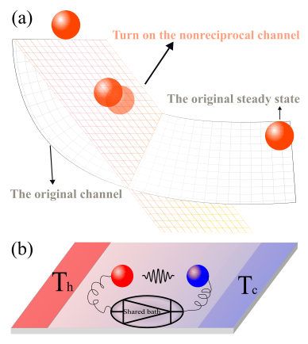
<figcaption class="paper-figure-caption"><b>Fig 1.</b> FIG. 1. (a) Operational principle of nonreciprocal relaxation acceleration. Activating the nonreciprocal coupling for a tran- sient duration significantly expedites the convergence of the quantum state toward the nonequilibrium target steady state. (b) Schematic layout of the model configuration. Two in- teracting bosonic modes are individually coupled to distinct thermal reservoirs maintained at unequal temperatures. The directional, nonreciprocal interaction between the modes is engineered via a shared common reservoir.</figcaption>
</figure>
<figure class="paper-figure-card">
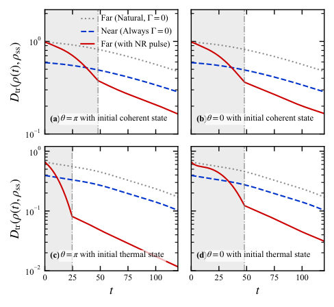
<figcaption class="paper-figure-caption"><b>Fig 2.</b> FIG. 2. Dynamics of nonreciprocal relaxation acceleration, quantified by the time-dependent trace distance between the instantaneous state and the reciprocal NESS Dtr(ρ(t), ρss). A distant initial state, far from the reciprocal NESS, relaxes sig- nificantly faster than a proximal (”near”) initial state when assisted by a transient activation of the nonreciprocal channel. Specifically, the distant initial states are prepared as a two- mode coherent state ρfar = ρ(1) coh(1.4)⊗ρ(2) coh(1.4) for (a) and (b) and thermal state ρfar = ρ(1) th (3.0) ⊗ρ(2) th (0.05) for (c) and (d) with ρ(i) th (¯n) denoting a local thermal state of the i-th mode with an average photon number ¯n, while the proximal...</figcaption>
</figure>
<figure class="paper-figure-card">
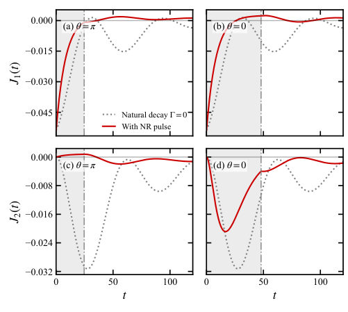
<figcaption class="paper-figure-caption"><b>Fig 3.</b> FIG. 3. Instantaneous heat currents J1(t) and J2(t) ex- changed with the local reservoirs, flowing from the respective reservoirs into the system. The left column, (a) and (c), cor- responds to the unidirectional coupling phase θ = π, whereas the right column, (b) and (d), corresponds to θ = 0. All panels highlight the relaxation from a highly excited initial state, comparing natural reciprocal decay (Γ = 0, gray dot- ted curves) with the nonreciprocal (NR) pulse-assisted evo- lution (solid curves). During the pulse duration (shaded re- gions), the engineered nonreciprocity dynamically redirects the inter-mode energy transport. By preventing the ther- mal energy from oscillating back and...</figcaption>
</figure>
</div>

<p><strong>Summary.</strong> This paper introduces a method to rapidly drive open quantum systems toward non-equilibrium steady states (NESS) by engineering transient nonreciprocal dissipation. Using a two-mode bosonic model, the authors show that this engineered channel acts as a 'shortcut,' accelerating relaxation rates robustly and independently of the direction of nonreciprocity. This technique offers a powerful tool for fast state preparation in quantum information applications.</p>
<p><strong>Why it may be interesting.</strong> This work provides a powerful, controllable thermodynamic technique for rapid cooling and state preparation in continuous-variable systems, which is highly relevant to quantum optics and quantum information processing protocols.</p>
<details>
<summary>Detailed structure</summary>
<p><strong>Main problem.</strong> The primary challenge addressed is dynamically accelerating the convergence of open quantum systems toward a non-equilibrium steady state (NESS), moving beyond traditional studies focused only on thermal equilibrium.</p>
<p><strong>Main result.</strong> The authors demonstrate that activating a transient, engineered nonreciprocal dissipative channel provides a robust shortcut to rapidly accelerate the system's approach to the target NESS.</p>
<p><strong>Method.</strong> The analysis employs both mean-field dynamics (tracking expectation values) and rigorous quantum fluctuation analysis using the evolution of the covariance matrix within the phase-space representation.</p>
<p><strong>Model / system.</strong> The model is a two-mode interacting bosonic system coupled to local thermal baths. The time evolution is governed by a Lindblad master equation, with nonreciprocity engineered via specific coupling terms in the dissipation channel.</p>
<p><strong>Key observables.</strong> Relaxation speedup (measured via trace distance), mean field expectation values ($\langle a_1 
angle, \langle a_2 
angle$), and the evolution of the covariance matrix $\mathbf{V}$.</p>
<p><strong>Important parameters / regimes.</strong> The nonreciprocity strength ($\Gamma$) controlled by phase conditions ($  heta$), system coupling ($\lambda$), and bath temperatures ($n_1, n_2$).</p>
<p><strong>Assumptions / limitations.</strong> Initial analysis uses mean-field theory, but the full treatment requires analyzing the second-order covariance matrix to capture quantum fluctuations accurately.</p>
<p><strong>Figures summary.</strong> Figures illustrate that activating the nonreciprocal coupling transiently expedites convergence to NESS (Fig. 1a), and plots show the rapid decay of state norms/trace distance during pulsed regions compared to natural decay rates.</p>
<p><strong>Paper structure.</strong> The paper progresses from identifying the challenge of accelerating NESS convergence, developing the theoretical framework using master equations and phase-space methods, demonstrating the acceleration via nonreciprocal coupling, and concluding with implications for quantum state preparation.</p>
</details>
<details>
<summary>Abstract</summary>
<p>Driven by recent discoveries regarding the quantum Mpemba effect, the anomalous relaxation dynamics of open quantum systems have garnered significant attention. While expediting thermalization to equilibrium has been extensively studied, dynamically accelerating the convergence toward nonequilibrium steady states remains a formidable challenge. In this article, we find a transient engineered nonreciprocal dissipative channel can provide a shortcut that accelerates convergence to the target reciprocal nonequilibrium steady state for the considered two-mode model and initial states. Using interacting bosonic modes, we demonstrate that the temporal activation of a nonreciprocal channel efficiently suppresses prolonged inter-mode energy oscillations, enforcing a rapid, unidirectional thermal dump into the environment. Counterintuitively, we find that this relaxation speedup is robust and independent of the direction of the nonreciprocity. Our results provide a powerful thermodynamic technique for rapid state preparation and cooling in continuous-variable quantum systems, particularly critical for low-temperature quantum information processing.</p>
</details>
<p><sub><a href="#top">↑ back to top</a></sub></p>

<p><a id="paper-2607.13842"></a></p>
<h3 id="post-critical-meson-dynamics-of-kibble-zurek-excitations-in-a-5564-qubit-quantum-annealer"><a href="http://arxiv.org/abs/2607.13842v1">Post-Critical Meson Dynamics of Kibble-Zurek Excitations in a 5,564-Qubit Quantum Annealer</a></h3>
<p><strong>Authors:</strong> Francis A. Bayocboc, Jacek Dziarmaga, Marek M. Rams, Jaka Vodeb<br>
<strong>Type:</strong> both · <strong>Category:</strong> statistical mechanics · <strong>PDF:</strong> <a href="https://arxiv.org/pdf/2607.13842v1">https://arxiv.org/pdf/2607.13842v1</a><br>
<strong>Analysis basis:</strong> full PDF text, analyzed in chunks
<strong>Topic relevance:</strong> 🔥 <code>analog quantum simulation</code> <strong>4/5</strong> · 🔥 <code>non-equilibrium dynamics</code> <strong>4/5</strong> · 🔥 <code>non-equilibrium universality</code> <strong>4/5</strong> · <code>driven-dissipative phase transition</code> <strong>3/5</strong> · <code>methods for driven-dissipative</code> <strong>3/5</strong> · <code>QC/QI experiment</code> <strong>2/5</strong> · <code>Frenkel-Kontorova</code> <strong>1/5</strong> · <code>Keldysh / 2PI / non-Gaussian methods</code> <strong>1/5</strong> · <code>correlated / nonlocal dissipation</code> <strong>1/5</strong> · <code>entanglement &amp; information structure</code> <strong>1/5</strong></p>
<div class="figure-strip-hint">↔ Scroll figures horizontally</div>
<div class="paper-figures-scroll">
<figure class="paper-figure-card">
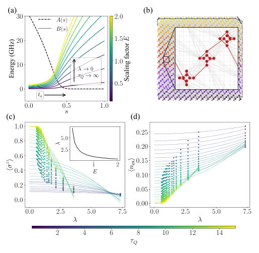
<figcaption class="paper-figure-caption"><b>Fig 1.</b> Figure 1. Quantum simulation protocol and zero-noise extrapo- lation. (a) D-Wave fast-annealing schedule, showing the transverse- field energy scale A(s) and Ising energy scale B(s) as functions of the annealing parameter s. The colored curves show the effective rescaling B(s) →EB(s) used for zero-noise extrapolation. In- creasing E shifts the crossing toward smaller effective noise λ, while the physical annealing time ta sets the quench time τQ near the crit- ical point. (b) Embedding of the one-dimensional Ising chain on the D-Wave quantum processing unit. The red path denotes the ac- tive 5,564-qubit chain used in the experiment. (c),(d) Representative zero-noise extrapolations at...</figcaption>
</figure>
<figure class="paper-figure-card">
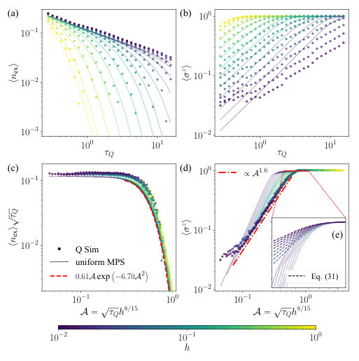
<figcaption class="paper-figure-caption"><b>Fig 2.</b> Figure 2. Biased Kibble–Zurek scaling and post-critical mag- netization. (a),(b) Zero-noise–extrapolated quantum simulation data (dots) for the final defect density ⟨nex⟩and magnetization ⟨σz⟩, com- pared with uniform-bias MPS simulations (solid lines), as functions of the quench time τQ for different longitudinal biases h. (c) Defect- density data rescaled by the Kibble–Zurek length ˆξ ∝√τQ and plot- ted against the biased scaling variable A = ˆξ/ξ∥∝√τQh8/15. The collapse shows the crossover from Kibble–Zurek defect creation at small A to Landau–Zener suppression at large A; the dashed line is a fit of the form αA exp(−aA2). (d) Final magnetization plot- ted against the same scaling...</figcaption>
</figure>
<figure class="paper-figure-card">
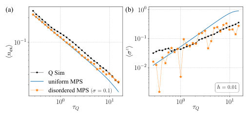
<figcaption class="paper-figure-caption"><b>Fig 3.</b> Figure 3. Effect of static disorder on defect creation and mag- netization. Zero-noise–extrapolated quantum simulation data (black dots) at h = 0.01, compared with clean uniform-bias MPS simula- tions (solid blue line) and disordered MPS simulations (orange stars). (a) Final defect density ⟨nex⟩as a function of quench time τQ. The disordered MPS data remain close to both the uniform-bias MPS and quantum-simulation results, showing that the total number of defects is primarily set by near-critical Kibble–Zurek creation and is compar- atively insensitive to weak static disorder. The remaining disparity is likely due to thermal effects on the device, not taken into account by our numerics. (b)...</figcaption>
</figure>
<figure class="paper-figure-card">
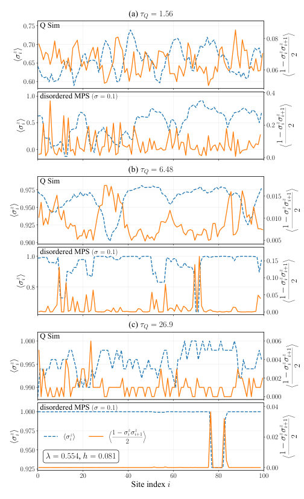
<figcaption class="paper-figure-caption"><b>Fig 4.</b> Figure 4. Spatial signatures of post-critical domain-wall local- ization. Local magnetization Mi = ⟨σz i ⟩(blue dashed lines) and local defect density ni = ⟨(1 −σz i σz i+1)/2⟩(orange solid lines) at h = 0.081, comparing zero-noise–extrapolated quantum simulation data with disordered MPS simulations for increasing quench times: (a) τQ = 1.56, (b) τQ = 6.48, and (c) τQ = 26.9. In both the quan- tum simulation and disordered MPS data, the local defect density is concentrated at preferred positions rather than being spatially uni- form. These peaks coincide with sharp changes in the magnetization profile, showing that the final kinks act as pinned domain walls sepa- rating locally ordered...</figcaption>
</figure>
<figure class="paper-figure-card">
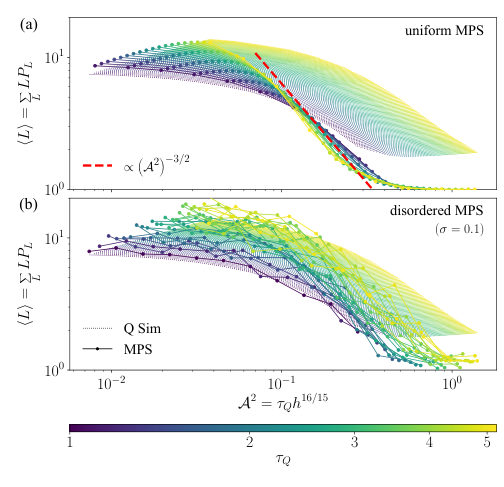
<figcaption class="paper-figure-caption"><b>Fig 5.</b> Figure 5. Domain-size signatures of post-critical meson dy- namics and localization. Average minority-domain size ⟨L⟩= P</figcaption>
</figure>
</div>

<p><strong>Summary.</strong> This paper investigates the fate of excitations following a quench across a quantum critical point using a large-scale quantum annealer. It distinguishes between robust defect creation governed by the Kibble-Zurek mechanism and subsequent post-critical dynamics. The key finding is that while defect counting works well, magnetization reveals that disorder localizes the domain structure, suggesting these two physical processes are distinct.</p>
<p><strong>Why it may be interesting.</strong> The work provides a concrete experimental platform (quantum annealers) to probe complex non-equilibrium dynamics beyond simple critical exponents, linking quantum annealing hardware capabilities directly to fundamental concepts in condensed matter physics like defect formation and relaxation.</p>
<details>
<summary>Detailed structure</summary>
<p><strong>Main problem.</strong> The study aims to separate the physics of defect creation near a quantum critical point (Kibble-Zurek mechanism) from the subsequent, nonintegrable dynamics of confined excitations.</p>
<p><strong>Main result.</strong> While defect density follows expected Kibble-Zurek scaling, post-critical observables like magnetization and domain statistics reveal that this evolution is interrupted by localization effects, particularly when disorder is present.</p>
<p><strong>Method.</strong> The research combines quantum simulation on large-scale annealers with theoretical analysis using Matrix Product States (MPS) simulations to compare defect counting versus full dynamical evolution.</p>
<p><strong>Model / system.</strong> The system modeled is a longitudinally biased one-dimensional quantum Ising chain, implemented physically on a 5,564-qubit quantum annealer. The dynamics are driven across a quantum critical point via controlled annealing schedules.</p>
<p><strong>Key observables.</strong> Kink density ($\langle n_{ex} 
angle$), longitudinal magnetization ($\langle\sigma_z
angle$), and minority-domain statistics (e.g., average domain size $\langle L 
angle$).</p>
<p><strong>Important parameters / regimes.</strong> The ratio $A = \hat{\xi}/\xi_{\parallel}$ controls the crossover between the Kibble-Zurek and Landau-Zener regimes; disorder strength is also a critical parameter.</p>
<p><strong>Assumptions / limitations.</strong> The analysis assumes that dynamics can be separated into near-critical defect creation followed by post-critical mesonic evolution, which may be interrupted by static disorder.</p>
<p><strong>Figures summary.</strong> Figures illustrate the data collapse of kink density and magnetization onto scaling functions of $A$, comparing quantum simulation results against both uniform and disordered MPS simulations to highlight localization effects.</p>
<p><strong>Paper structure.</strong> The paper first establishes the framework using quantum annealers for non-equilibrium dynamics. It then analyzes defect creation via KZM/LZ crossover, contrasting this with post-critical observables like magnetization. Finally, it uses theoretical modeling (mesonic states) and disorder simulations to show that localization governs the late-time domain structure.</p>
</details>
<details>
<summary>Abstract</summary>
<p>Quantum phase transitions provide a controlled route for generating many-body excitations, but the dynamics after the critical point can be as important as the initial defect creation. Recent progress in quantum annealing has made it possible to access coherent nonequilibrium dynamics in programmable Ising systems with thousands of superconducting qubits. Here we use this capability to study a longitudinally biased quantum Ising chain, where Kibble--Zurek defect creation is followed by nonintegrable post-critical dynamics. The longitudinal bias confines kink--antikink excitations into mesonic bound states, so that the final spin configurations encode both the production of defects near the critical point and the subsequent evolution of the confined excitations. Using energy-scale rescaling and zero-noise extrapolation, we find that the defect density follows the expected biased Kibble--Zurek/Landau--Zener crossover and agrees with matrix-product-state simulations with uniform bias. In contrast, magnetization, spatial profiles, and minority-domain statistics reveal that mesonic evolution is interrupted by localization of the post-critical domain pattern. Matrix-product-state simulations with disorder reproduce this separation between robust defect creation and localized post-critical dynamics. Our results show that large-scale quantum annealers can probe the fate of critical excitations beyond defect counting.</p>
</details>
<p><sub><a href="#top">↑ back to top</a></sub></p>

<p><a id="paper-2607.13790"></a></p>
<h3 id="bridging-frustration-and-non-hermiticity-via-compass-an-adaptive-biorthogonal-neural-quantum-state-framework"><a href="http://arxiv.org/abs/2607.13790v1">Bridging Frustration and Non-Hermiticity via COMPASS: An Adaptive Biorthogonal Neural Quantum State Framework</a></h3>
<p><strong>Authors:</strong> Lavoisier Wah, Flore K. Kunst, Mohamed Hibat-Allah<br>
<strong>Type:</strong> theory · <strong>Category:</strong> numerical methods · <strong>PDF:</strong> <a href="https://arxiv.org/pdf/2607.13790v1">https://arxiv.org/pdf/2607.13790v1</a><br>
<strong>Analysis basis:</strong> full PDF text, analyzed in chunks
<strong>Topic relevance:</strong> 🔥 <code>methods for driven-dissipative</code> <strong>4/5</strong> · <code>analog quantum simulation</code> <strong>3/5</strong> · <code>driven-dissipative phase transition</code> <strong>3/5</strong> · <code>exotic spin models in light-matter</code> <strong>3/5</strong> · <code>correlated / nonlocal dissipation</code> <strong>2/5</strong> · <code>non-equilibrium dynamics</code> <strong>2/5</strong> · <code>non-equilibrium universality</code> <strong>2/5</strong> · <code>Keldysh / 2PI / non-Gaussian methods</code> <strong>1/5</strong> · <code>Kondo &amp; dissipative impurity</code> <strong>1/5</strong> · <code>entanglement &amp; information structure</code> <strong>1/5</strong></p>
<div class="figure-strip-hint">↔ Scroll figures horizontally</div>
<div class="paper-figures-scroll">
<figure class="paper-figure-card">
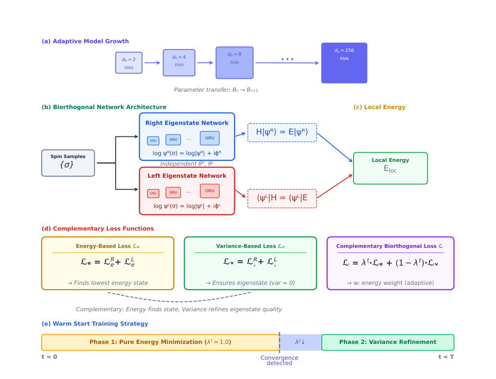
<figcaption class="paper-figure-caption"><b>Fig 1.</b> Figure 1: Complementary optimization method for progressive adaptive state search. We show a schematic presentation of our method. (a) We start by building an adaptive RNN, which progressively increases the network capacity during training following an adaptive scheme; then, (b) we initialize two independent RNNs with gated recurrent unit (GRU) cells to represent the right and left eigenstates of the model shown in blue and red, respectively. (c) We use the outputs from these RNNs to determine the local energy. As a next step, (d) we perform a complementary optimization in two phases: first we do an energy-based optimization to target the ground-state energy (shown in yellow), and second,...</figcaption>
</figure>
<figure class="paper-figure-card">
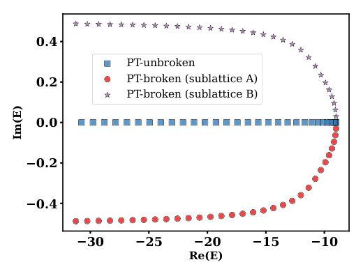
<figcaption class="paper-figure-caption"><b>Fig 2.</b> Figure 2: Broken vs unbroken PT symmetry. We plot the imaginary part of the ground-state energy of the 1D Ising chain against its real part for different values of η ∈[0, 3], and ξ = η/10. We consider δλ = 0.1 + i0.1 when we perturb sublattice A, and δλ = 0.1 −i0.1 when we perturb sublattice B. Open boundries conditions (OBCs) are considered, and N = 10.</figcaption>
</figure>
<figure class="paper-figure-card">
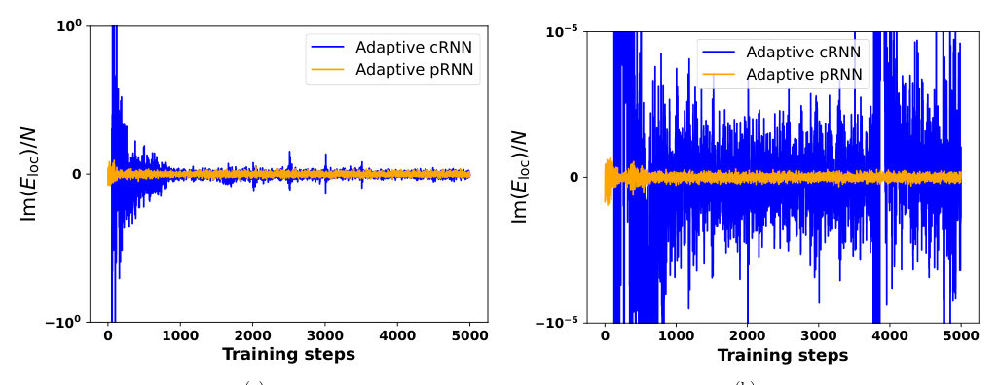
<figcaption class="paper-figure-caption"><b>Fig 3.</b> Figure 3: Energy per spin for the 1D PT-symmetric Hamiltonian. We plot the imaginary part of the ground-state energy per spin of the 1D PT-symmetric TFIM in Eq. (10), for (a) N = 10, and (b) N = 100 spins using both the adaptive cRNN (in blue) and pRNN (orange). We consider J = 1, η = 1.6 and ξ = 0.16.</figcaption>
</figure>
<figure class="paper-figure-card">
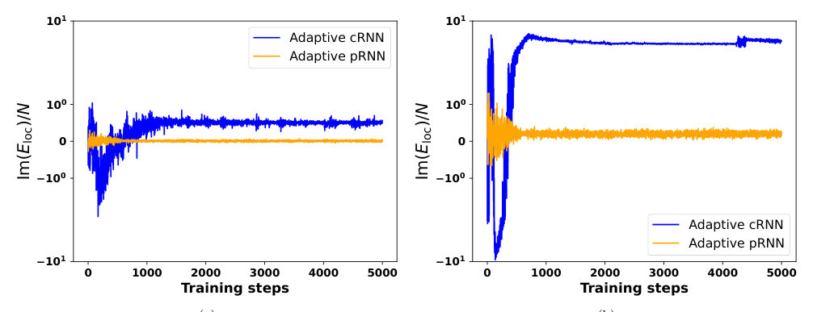
<figcaption class="paper-figure-caption"><b>Fig 4.</b> Figure 4: Energy per spin for the generic 1D non-Hermitian Hamiltonian. We plot the imaginary part of the ground-state energy per spin of the generic 1D TFIM in Eq. (11), for (a) N = 10, and (b) N = 100 spins using both the adaptive cRNN (in blue) and pRNN (orange). We consider J = 1, η = 1.6, ξ = 0.16 and δλ =?.</figcaption>
</figure>
<figure class="paper-figure-card">
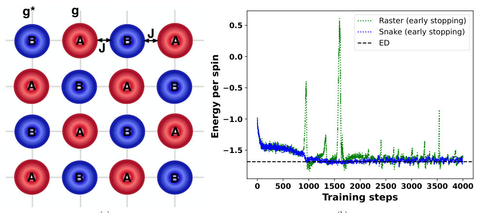
<figcaption class="paper-figure-caption"><b>Fig 5.</b> Figure 5: The 2D PT-symmetric TFIM. We present (a) a schematic representation of the 2D PT-symmetric TFIM (12), and (b) plot the ground state energy per spin with early stopping with the snake scan (blue), and the raster scan (green). We compare the results to ED (black). We consider OBCs, J = 1, η = 1.6, ξ = η/10, Lx × Ly = 3 × 3, a patience step Npat = 500, and a convergence threshold of 10−5. The snake scanning is more stable and reliable compared to the raster scanning. ED could not simulate Lx × Ly = 4 × 4.</figcaption>
</figure>
</div>

<p><strong>Summary.</strong> The paper introduces COMPASS, an adaptive biorthogonal neural network framework designed for simulating Non-Hermitian many-body systems. It stabilizes ground state finding by combining energy and variance minimization into a progressive optimization scheme. This allows researchers to study exotic phenomena like spectral instability shielding via frustration and novel topological structures in NH quantum magnets.</p>
<p><strong>Why it may be interesting.</strong> This work provides a powerful, generalizable numerical tool (COMPASS) that extends quantum simulation techniques beyond the Hermitian domain, allowing direct investigation of complex physics relevant to open or dissipative quantum systems.</p>
<details>
<summary>Detailed structure</summary>
<p><strong>Main problem.</strong> Developing a robust computational framework to study Non-Hermitian (NH) many-body systems, specifically bridging concepts of frustration and non-Hermiticity.</p>
<p><strong>Main result.</strong> The proposed COMPASS framework successfully simulates NH systems directly, revealing that gap frustration shields against spectral instability and generating novel topological features like the diabolic ring.</p>
<p><strong>Method.</strong> It employs a Complementary Optimization Method for Progressive Adaptive State Search (COMPASS) using adaptive biorthogonal Neural Quantum States (NQSs). This method alternates between energy minimization and variance minimization to ensure stable convergence to ground-state eigenpairs.</p>
<p><strong>Model / system.</strong> The framework is applied to 1D and 2D NH many-body systems, including frustrated magnetism models based on extensions of the J1-J2 spin chain. The formalism requires a biorthogonal approach using left ($\Psi_L$) and right ($\Psi_R$) eigenstates.</p>
<p><strong>Key observables.</strong> Ground-state eigenpairs ($E$), energy expectation value $\langle H 
angle$, energy variance ($\sigma^2$), and the fidelity of the biorthogonal overlap $|\langle\Psi_{L0}|\Psi_{R0}
angle|$.</p>
<p><strong>Important parameters / regimes.</strong> Frustration coupling strength, PT-symmetry breaking parameters (e.g., $\gamma/J_1$), system size ($N=1D$ up to 200, $N=2D$ up to 100).</p>
<p><strong>Assumptions / limitations.</strong> The framework assumes that physically-informed ansatz selection is crucial for reliable NH simulations; it avoids Hermitian embeddings or adiabatic continuation.</p>
<p><strong>Figures summary.</strong> Figures illustrate the COMPASS optimization process (adaptive growth, loss functions), PT-symmetry breaking in 1D Ising chains, and the emergence of Exceptional Points (EPs) when simulating frustrated NH models.</p>
<p><strong>Paper structure.</strong> The paper introduces the COMPASS method using adaptive biorthogonal NQSs. It details the two-phase optimization process ($\mathcal{L}_e$ then $\mathcal{L}_v$) for finding ground states in NH systems. Finally, it applies this to frustrated magnetism to study spectral topology and EP emergence.</p>
</details>
<details>
<summary>Abstract</summary>
<p>In this work, we introduce a complementary optimization method for progressive and adaptive state search (COMPASS) based on biorthogonal adaptive recurrent neural quantum states. Our approach combines an adaptive autoregressive architecture with a biorthogonal variational Monte Carlo scheme as well as a complementary optimization scheme that alternates between energy and variance minimization. This enables the stable convergence to ground-state eigenpairs, while avoiding Markov chain sampling through exact autoregressive generation. We demonstrate that for parity-time(PT)-symmetric Hamiltonians, unconstrained complex ansatze can spontaneously break PT symmetry during optimization, even in the unbroken phase, leading to spurious imaginary energies. Real-valued ansatze, on the other hand, naturally constrain the optimization to the correct physical manifold. Conversely, for generic non-Hermitian (NH) Hamiltonians without symmetry protection and complex spectra, complex ansatze are essential for capturing complex ground-state properties. Our results establish that physically-informed ansatz selection is crucial for reliable NH simulations. By combining adaptive architectures, biorthogonal optimization, and symmetry-aware modeling, this framework enables a direct study of 1D and 2D NH many-body systems without Hermitian embeddings or adiabatic continuation. Applying this framework to systems with frustrated magnetism, we show that gap frustration provides a quantitative shield against NH spectral instability, with the frustration gap setting a critical threshold for PT-symmetry breaking. Also, complexifying the frustration coupling itself generates a new topologically nontrivial network of diabolic level crossings, controlled by the phase of the complex coupling, that has no Hermitian analog. We term this novel spectral topology in NH frustrated systems the diabolic ring.</p>
</details>
<p><sub><a href="#top">↑ back to top</a></sub></p>

<p><a id="paper-2607.13833"></a></p>
<h3 id="cooling-rate-and-glassy-behavior-in-the-fermi-pasta-ulam-system"><a href="http://arxiv.org/abs/2607.13833v1">Cooling rate and glassy behavior in the Fermi--Pasta--Ulam system</a></h3>
<p><strong>Authors:</strong> Matteo Razza, Andrea Carati, Luigi Galgani<br>
<strong>Type:</strong> theory · <strong>Category:</strong> statistical mechanics · <strong>PDF:</strong> <a href="https://arxiv.org/pdf/2607.13833v1">https://arxiv.org/pdf/2607.13833v1</a><br>
<strong>Analysis basis:</strong> full PDF text, analyzed in chunks
<strong>Topic relevance:</strong> 🔥 <code>non-equilibrium dynamics</code> <strong>4/5</strong> · <code>non-equilibrium universality</code> <strong>3/5</strong> · <code>analog quantum simulation</code> <strong>2/5</strong> · <code>driven-dissipative phase transition</code> <strong>2/5</strong> · <code>scars &amp; prethermalization</code> <strong>2/5</strong> · <code>Frenkel-Kontorova</code> <strong>1/5</strong> · <code>Keldysh / 2PI / non-Gaussian methods</code> <strong>1/5</strong> · <code>correlated / nonlocal dissipation</code> <strong>1/5</strong> · <code>entanglement &amp; information structure</code> <strong>1/5</strong> · <code>methods for driven-dissipative</code> <strong>1/5</strong></p>
<div class="figure-strip-hint">↔ Scroll figures horizontally</div>
<div class="paper-figures-scroll">
<figure class="paper-figure-card">
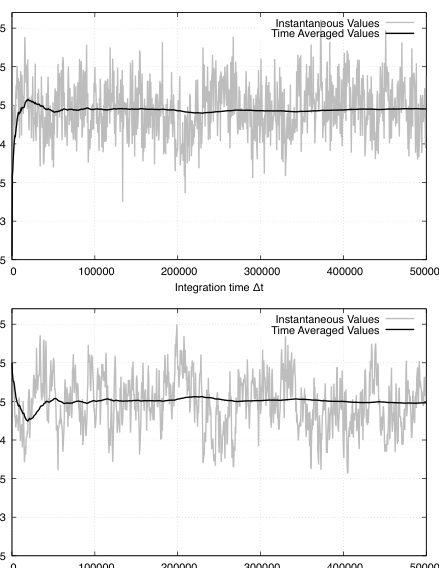
<figcaption class="paper-figure-caption"><b>Fig 1.</b> FIG. 1. FPU kinetic energy vs. time (upper panel) and gas kinetic energy per particle vs. time (lower one). Notice that the two kinetic energies essentially coincide after a time of order 105.</figcaption>
</figure>
<figure class="paper-figure-card">
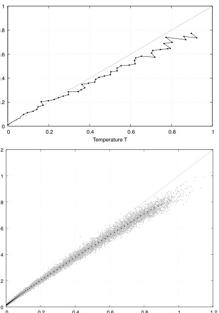
<figcaption class="paper-figure-caption"><b>Fig 2.</b> FIG. 2. Cooling process starting from Tgas = 1 with time step τ = 0.0025, N + 2 = 200, initial energy of normal modes Ek ≈0.5051 for all k. Upper panel: single trajectory. Lower panel: 128 trajectories. Grey points are data for the single trajectory, black ones are the resulting average.</figcaption>
</figure>
<figure class="paper-figure-card">
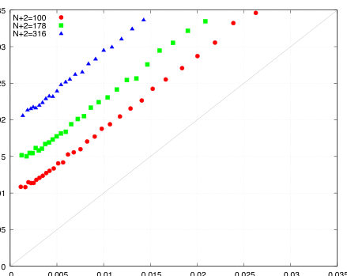
<figcaption class="paper-figure-caption"><b>Fig 3.</b> FIG. 3. Cooling process for different values of N + 2 = 100, 178, 316, for temperature below 0.035. Here the cool- ing rate is ξ = 4 · 10−7.</figcaption>
</figure>
<figure class="paper-figure-card">
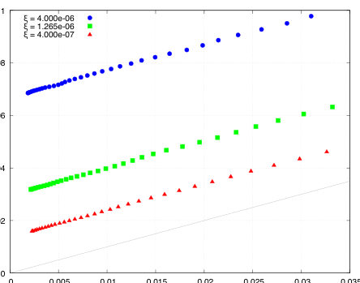
<figcaption class="paper-figure-caption"><b>Fig 4.</b> FIG. 4. Cooling process for different value of the cooling rate, for temperature below 0.035. Here the particles number is N + 2 = 200.</figcaption>
</figure>
<figure class="paper-figure-card">
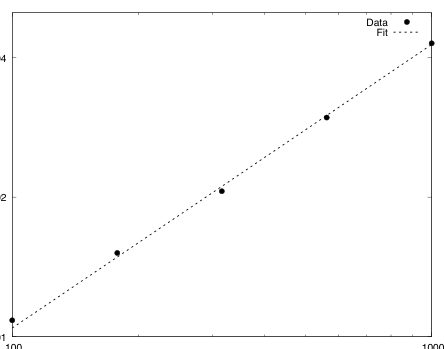
<figcaption class="paper-figure-caption"><b>Fig 5.</b> FIG. 5. Dependence of the zero–point energy E0 from the particles number N. Points are computed by the bin-average procedure.</figcaption>
</figure>
</div>

<p><strong>Summary.</strong> The paper numerically examines how a Fermi--Pasta--Ulam lattice cools when coupled to an external bath whose temperature is lowered at a specific rate. It finds that the cooling process deviates significantly from equilibrium below a stochastic threshold, leading to a measurable residual zero-point energy ($E_0$). This residual energy exhibits a predictable power-law scaling with both system size and the applied cooling rate.</p>
<p><strong>Why it may be interesting.</strong> This work explores non-equilibrium dynamics in classical many-body systems, which shares conceptual links with open quantum system thermodynamics and relaxation processes studied in AMO physics.</p>
<details>
<summary>Detailed structure</summary>
<p><strong>Main problem.</strong> The study investigates the non-equilibrium cooling process and associated glassy behavior of a Fermi--Pasta--Ulam (FPU) system when coupled to an external bath whose temperature is reduced at a controlled rate.</p>
<p><strong>Main result.</strong> The residual zero-point energy ($E_0$) maintained by the FPU system below equilibrium scales with both system size ($N$) and cooling rate ($\xi$) according to $E_{0} \sim (\xi N)^{2/3}$.</p>
<p><strong>Method.</strong> Numerical simulations using the Verlet method are employed to track the time evolution of energy components during the controlled cooling process.</p>
<p><strong>Model / system.</strong> The system is an FPU lattice interacting via a Lennard-Jones potential, coupled to a gas bath. The total Hamiltonian includes both the FPU dynamics and the coupling interaction potential.</p>
<p><strong>Key observables.</strong> Zero-point energy ($E_0$), specific energy ($u = E/N$), and the deviation of measured energy from expected equilibrium values.</p>
<p><strong>Important parameters / regimes.</strong> Cooling rate ($\xi$), system size ($N$), and the stochastic threshold below which non-equilibrium effects dominate.</p>
<p><strong>Assumptions / limitations.</strong> The analysis relies on simulating the cooling process by scaling gas particle velocities at discrete steps, assuming a weak stochastic threshold dictates the onset of glassy behavior.</p>
<p><strong>Figures summary.</strong> Figures illustrate the time evolution of kinetic energy during cooling and show how specific energy deviates from linear expectations as temperature drops, confirming power-law dependencies for $E_0$ on $N$ and $\xi$.</p>
<p><strong>Paper structure.</strong> The paper details the setup of the FPU system coupled to a bath, describes the numerical simulation procedure involving controlled cooling rates ($\xi$), presents diagnostics like zero-point energy ($E_0$), and concludes with the derived power-law scaling relationship.</p>
</details>
<details>
<summary>Abstract</summary>
<p>In this work, we numerically studied the cooling process of a Fermi--Pasta--Ulam system, which occurs when the FPU system is placed in contact with a gas whose temperature $T$ is reduced with a certain cooling rate $ξ$. It was found that the existence of a weak stochastic threshold has a significant impact on the cooling process, because below such a stochastic threshold the specific FPU energy is larger than its temperature, i.e., the FPU system falls out of equilibrium. The difference remains finite in the limit $T \to 0$, so that the FPU system maintains a residual amount of energy $E_0$ at vanishing temperature. Our numerical simulations reveal that this energy exhibits a power--law dependence on both the system size and the cooling rate, scaling approximately as $E_{0} \sim (ξN)^{2/3}$.</p>
</details>
<p><sub><a href="#top">↑ back to top</a></sub></p>

<p><a id="paper-2607.13809"></a></p>
<h3 id="markovian-evolution-from-a-novel-scheme"><a href="http://arxiv.org/abs/2607.13809v1">Markovian evolution from a novel scheme</a></h3>
<p><strong>Authors:</strong> Fardin Kheirandish, Zahra Iranshahi, Fatemeh Bakhtiari, Adam Moradian<br>
<strong>Type:</strong> theory · <strong>Category:</strong> other · <strong>PDF:</strong> <a href="https://arxiv.org/pdf/2607.13809v1">https://arxiv.org/pdf/2607.13809v1</a><br>
<strong>Analysis basis:</strong> full PDF text, analyzed in chunks
<strong>Topic relevance:</strong> 🔥 <code>methods for driven-dissipative</code> <strong>4/5</strong> · <code>correlated / nonlocal dissipation</code> <strong>3/5</strong> · <code>driven-dissipative phase transition</code> <strong>3/5</strong> · <code>non-equilibrium dynamics</code> <strong>3/5</strong> · <code>non-equilibrium universality</code> <strong>2/5</strong> · <code>Keldysh / 2PI / non-Gaussian methods</code> <strong>1/5</strong> · <code>Kondo &amp; dissipative impurity</code> <strong>1/5</strong> · <code>analog quantum simulation</code> <strong>1/5</strong></p>
<div class="figure-strip-hint">↔ Scroll figures horizontally</div>
<div class="paper-figures-scroll">
<figure class="paper-figure-card">
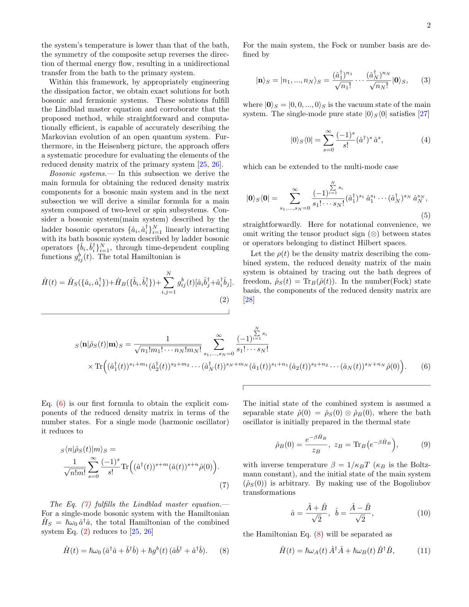
<figcaption class="paper-figure-caption"><b>Fig 1.</b> Low-resolution page preview, page 2</figcaption>
</figure>
<figure class="paper-figure-card">
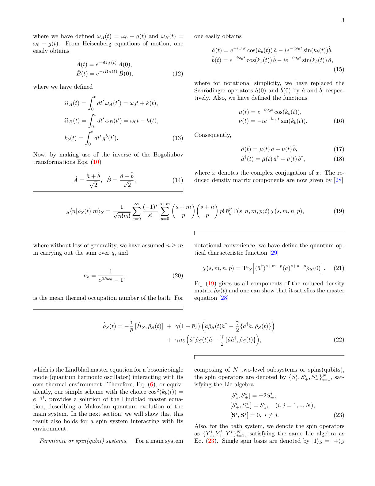
<figcaption class="paper-figure-caption"><b>Fig 2.</b> Low-resolution page preview, page 3</figcaption>
</figure>
<figure class="paper-figure-card">
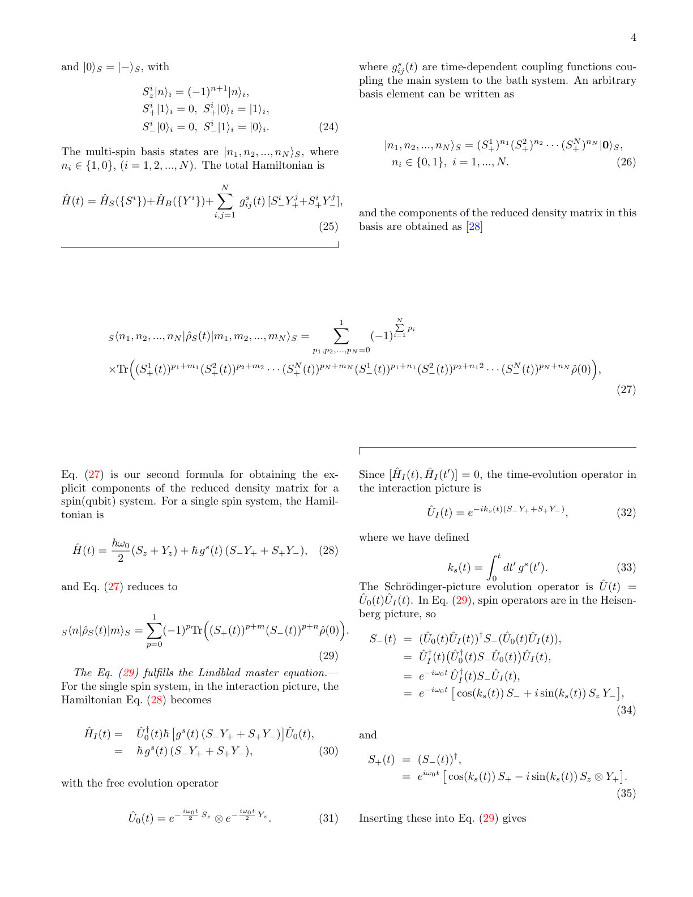
<figcaption class="paper-figure-caption"><b>Fig 3.</b> Low-resolution page preview, page 4</figcaption>
</figure>
<figure class="paper-figure-card">
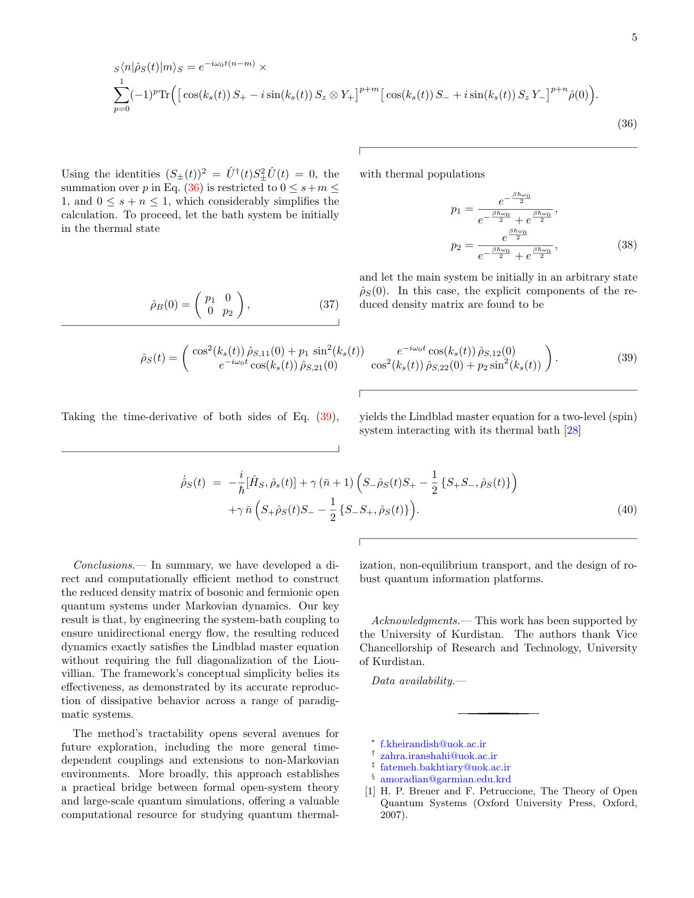
<figcaption class="paper-figure-caption"><b>Fig 4.</b> Low-resolution page preview, page 5</figcaption>
</figure>
<figure class="paper-figure-card">
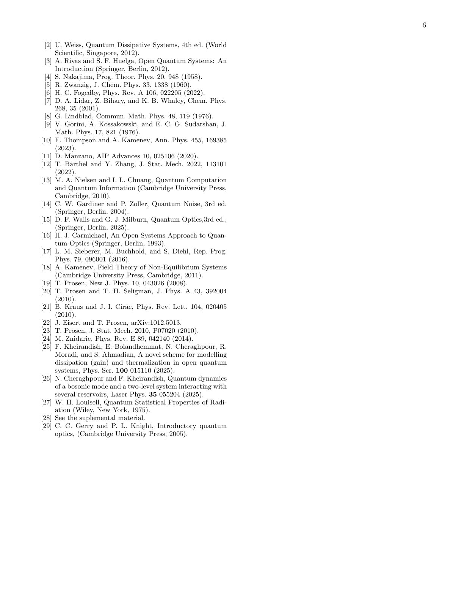
<figcaption class="paper-figure-caption"><b>Fig 5.</b> Low-resolution page preview, page 6</figcaption>
</figure>
</div>

<p><strong>Summary.</strong> This paper presents an efficient theoretical framework to calculate the reduced density matrix for open quantum systems, applicable to both bosons and fermions. By modeling the environment coupling carefully, the authors derive exact solutions that rigorously satisfy the Lindblad master equation. This offers a straightforward tool for simulating complex dissipative dynamics in many-body physics.</p>
<p><strong>Why it may be interesting.</strong> This is highly relevant as it provides a powerful, non-standard computational tool for simulating complex open quantum dynamics (quantum transport/control) without resorting to full Liouvillian space diagonalization.</p>
<details>
<summary>Detailed structure</summary>
<p><strong>Main problem.</strong> The core problem is developing a computationally efficient method to derive the reduced density matrix for open quantum many-body systems undergoing Markovian evolution.</p>
<p><strong>Main result.</strong> The authors introduce a framework that yields exact solutions satisfying the Lindblad master equation for both bosonic and fermionic cases, bypassing costly Liouvillian diagonalization.</p>
<p><strong>Method.</strong> The method models the environment as a copy of the primary system with a monotonically decaying coupling to enforce unidirectional energy flow, allowing direct calculation of the reduced density matrix via tracing out bath degrees of freedom.</p>
<p><strong>Model / system.</strong> The study addresses open quantum systems (bosonic and fermionic) interacting with an environment. The dynamics are governed by the Lindblad master equation, which is satisfied exactly by the proposed framework.</p>
<p><strong>Key observables.</strong> Reduced density matrix components ($\hat{
ho}_S(t)$), dissipative dynamics.</p>
<p><strong>Important parameters / regimes.</strong> Dissipation parameters ($\gamma$), bath temperature/occupancy ($ar{n}$), coupling strengths ($g_{ij}(t)$).</p>
<p><strong>Assumptions / limitations.</strong> The Markovian approximation is assumed, and the method relies on engineering system-bath coupling to ensure unidirectional energy flow.</p>
<p><strong>Figures summary.</strong> Not specified in the provided notes; the structure is based on mathematical derivations involving equations (Eq. 1) through (Eq. 40).</p>
<p><strong>Paper structure.</strong> The paper builds from defining the general Hamiltonian and master equation for open systems, deriving explicit formulas for bosonic and fermionic cases using specific coupling schemes, and culminating in a generalized, efficient method that satisfies the Lindblad form.</p>
</details>
<details>
<summary>Abstract</summary>
<p>The Markovian dynamics of open quantum many-body systems are typically governed by the Lindblad master equation, yet obtaining the reduced density matrix for bosonic and fermionic systems remains a formidable numerical challenge due to the exponential growth of the Hilbert space. Here, we introduce a computationally efficient framework for constructing the reduced density matrix by modeling the environment as a copy of the primary system with a monotonically decaying coupling that enforces unidirectional energy flow. Our method directly yields exact solutions that rigorously satisfy the Lindblad master equation for both bosonic and fermionic cases, bypassing the need for costly Liouvillian diagonalization. We validate our approach through applications to paradigmatic models, demonstrating accurate reproduction of dissipative dynamics across a broad parameter regime. This work provides a straightforward and powerful tool for simulating Markovian open-system evolution, with immediate applicability to quantum transport and control problems in many-body physics.</p>
</details>
<p><sub><a href="#top">↑ back to top</a></sub></p>

<p><a id="paper-2607.13975"></a></p>
<h3 id="universal-quantum-computation-with-multi-mode-schrodinger-cat-states-stabilized-by-non-local-dissipation-engineering"><a href="http://arxiv.org/abs/2607.13975v1">Universal Quantum Computation with Multi-Mode Schrödinger Cat States Stabilized by Non-Local Dissipation Engineering</a></h3>
<p><strong>Authors:</strong> Jesper Lind-Olsen, Jonas Lidal, Tron Omland, Joakim Bergli<br>
<strong>Type:</strong> theory · <strong>Category:</strong> quantum information and computing · <strong>PDF:</strong> <a href="https://arxiv.org/pdf/2607.13975v1">https://arxiv.org/pdf/2607.13975v1</a><br>
<strong>Analysis basis:</strong> full PDF text, analyzed in chunks
<strong>Topic relevance:</strong> 🔥 <code>correlated / nonlocal dissipation</code> <strong>4/5</strong> · <code>methods for driven-dissipative</code> <strong>3/5</strong> · <code>driven-dissipative phase transition</code> <strong>2/5</strong> · <code>entanglement &amp; information structure</code> <strong>2/5</strong> · <code>non-equilibrium dynamics</code> <strong>2/5</strong> · <code>Keldysh / 2PI / non-Gaussian methods</code> <strong>1/5</strong> · <code>Tavis-Cummings &amp; cavity-many-emitter</code> <strong>1/5</strong> · <code>analog quantum simulation</code> <strong>1/5</strong> · <code>correlated cavity matter</code> <strong>1/5</strong> · <code>non-equilibrium universality</code> <strong>1/5</strong></p>
<div class="figure-strip-hint">↔ Scroll figures horizontally</div>
<div class="paper-figures-scroll">
<figure class="paper-figure-card">
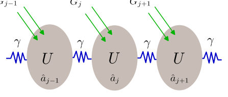
<figcaption class="paper-figure-caption"><b>Fig 1.</b> FIG. 1: An illustration of the setup. A set of Kerr anharmonic oscillators with Kerr non-linearity U and driven by a two-photon pump with amplitude G coupled through a lossy intermediate reservoir with strength γ. The whole system has periodic boundary conditions.</figcaption>
</figure>
<figure class="paper-figure-card">
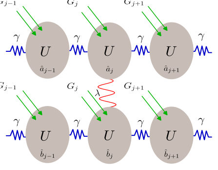
<figcaption class="paper-figure-caption"><b>Fig 2.</b> FIG. 2: The two qubit model includes the coupling Hamiltonian ˆHBS = λ(ˆajˆb† j + ˆa† jˆbj).</figcaption>
</figure>
<figure class="paper-figure-card">
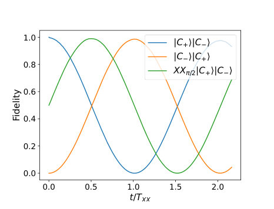
<figcaption class="paper-figure-caption"><b>Fig 3.</b> FIG. 3: Dynamics of the fidelity of the instantaneous state ρϕϕ(t) when |ψ(0)⟩= |C+⟩|C−⟩against |C+⟩|C−⟩ (blue), |C−⟩|C+⟩(orange) and XXπ/2 |C+⟩|C−⟩ (green). U/G = 1, γ/U = 200 and λ/U = 0.1. N = 9 for all simulations. The time parameter is normalized by TXX = πU 4λG, the period for XX(π).</figcaption>
</figure>
<figure class="paper-figure-card">
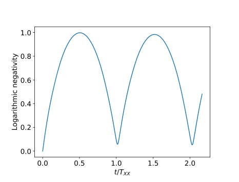
<figcaption class="paper-figure-caption"><b>Fig 4.</b> FIG. 4: Logarithmic negativity as an entanglement measure of the instantaneous state ρϕϕ(t). Parameters are the same as in figure 3.</figcaption>
</figure>
<figure class="paper-figure-card">
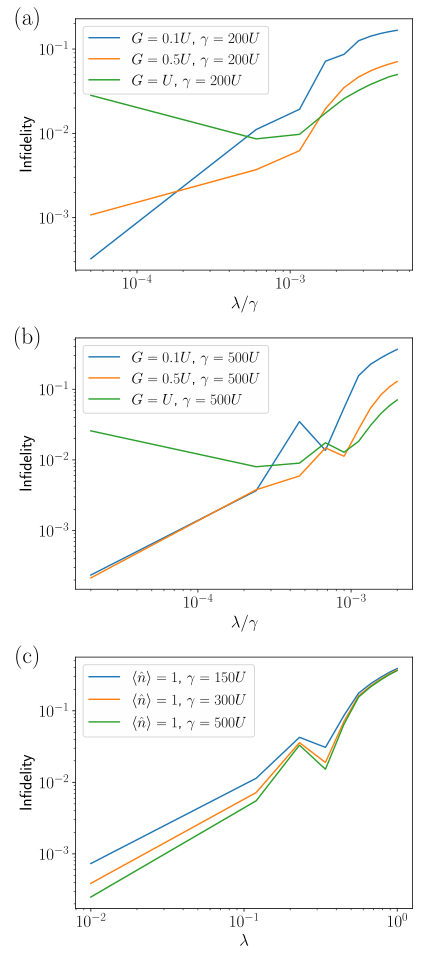
<figcaption class="paper-figure-caption"><b>Fig 5.</b> FIG. 5: Resulting infidelities at time t = TXX as a function of λ for fixed U/(Nγ), with γ = 200U (5a), and γ = 500U (5b). The blue, orange, and green curves correspond to U/G = 10, U/G = 2 and U/G = 1, respectively. In (5c) ⟨ˆn⟩= NG/U = 1 is fixed, for varying γ = 150U (blue), γ = 300U (orange) and γ = 500U (green). With N = 9, this corresponds to G = U/N ≈0.11U, a similar value as the curves showing highest fidelity in the small λ limit for the case of varying G.</figcaption>
</figure>
</div>

<p><strong>Summary.</strong> The paper proposes that multi-mode Schrödinger Cat States can serve as a robust platform for universal quantum computation. By engineering non-local dissipation and utilizing the Zeno limit approximation, the authors derive protocols to achieve arbitrary single-qubit rotations and an entangling two-qubit gate. This establishes SCS states as a viable architecture for future bosonic quantum processors.</p>
<p><strong>Why it may be interesting.</strong> This work directly addresses quantum computation using bosonic systems, providing concrete protocols for implementing fundamental gates using engineered dissipation, which is highly relevant to open quantum system research in AMO/Quantum Optics.</p>
<details>
<summary>Detailed structure</summary>
<p><strong>Main problem.</strong> The primary goal is establishing a framework for universal quantum computation using multi-mode Schrödinger Cat States (SCS) stabilized by engineered non-local dissipation.</p>
<p><strong>Main result.</strong> The authors demonstrate that arbitrary single-qubit control and an entangling $XX(\pi/2)$ gate can be implemented, thereby realizing a universal gate set for bosonic quantum computation.</p>
<p><strong>Method.</strong> The analysis relies on deriving effective low-dimensional dynamics by projecting the full system evolution onto the dark mode subspace using the Zeno limit approximation.</p>
<p><strong>Model / system.</strong> The physical platform is modeled as a 1D chain of Kerr anharmonic oscillators coupled via engineered non-local dissipation, whose dynamics are governed by a Lindblad master equation in Fourier space.</p>
<p><strong>Key observables.</strong> Gate fidelity dynamics, entanglement generation (e.g., logarithmic negativity), and the evolution of the density matrix $
ho_{\phi\phi}(t)$.</p>
<p><strong>Important parameters / regimes.</strong> Dissipation rates ($\gamma$), Kerr non-linearity strength ($U$), coupling strengths ($\lambda$), and the effective Hamiltonian parameters derived from these constants.</p>
<p><strong>Assumptions / limitations.</strong> The derivation heavily relies on the strong dissipation regime (Zeno limit) to define a stable, low-dimensional logical subspace.</p>
<p><strong>Figures summary.</strong> Figures illustrate the physical setup involving Kerr oscillators driven by pumping and coupled through lossy reservoirs. Subsequent figures plot fidelity dynamics for single and two-qubit operations over time.</p>
<p><strong>Paper structure.</strong> The paper progresses from establishing the basic concept of SCS stabilization to deriving the effective Hamiltonian, demonstrating individual qubit control (X and Z rotations), and finally coupling two such arrays to achieve a universal entangling gate set.</p>
</details>
<details>
<summary>Abstract</summary>
<p>Schrödinger cat states provide a hardware-efficient platform for bosonic quantum error correction by encoding logical information in protected manifolds of harmonic oscillators. While previous work has demonstrated the dissipative stabilization of multi-mode Schrödinger cat states as robust quantum memories, a framework for universal quantum computation has remained unavailable. Here we extend this approach by introducing a universal gate set for dissipatively stabilized multi-mode cat qubits. Using a chain of Kerr non-linear oscillators coupled through engineered non-local dissipation and an effective low-dimensional description, we show how arbitrary single-qubit control can be achieved through arbitrary rotation around the $X$-axis and $π/2$-rotation around the $Z$-axis. We further show how coupling two such stabilized arrays through just one oscillator on each respective array enables coherent entangling operations through implementation of the $XX(π/2)$ gate. Numerical simulations demonstrate high-fidelity gate dynamics and entanglement generation under realistic parameters. Finally, we analyze the effects of induced and intrinsic photon loss, disorder, and the validity regime of the effective low-dimensional theory. Our results establish dissipatively stabilized multi-mode Schrödinger cat states as a potential architecture for universal bosonic quantum computation.</p>
</details>
<p><sub><a href="#top">↑ back to top</a></sub></p>

<p><a id="paper-2607.13865"></a></p>
<h3 id="a-lie-algebraic-approach-to-non-markovian-quantum-dynamics"><a href="http://arxiv.org/abs/2607.13865v1">A Lie-algebraic approach to non-Markovian quantum dynamics</a></h3>
<p><strong>Authors:</strong> Haijin Ding, Stephen S. -T. Yau, Zhiwen Zhang<br>
<strong>Type:</strong> theory · <strong>Category:</strong> other · <strong>PDF:</strong> <a href="https://arxiv.org/pdf/2607.13865v1">https://arxiv.org/pdf/2607.13865v1</a><br>
<strong>Analysis basis:</strong> full PDF text, analyzed in chunks
<strong>Topic relevance:</strong> 🔥 <code>quantum measurements</code> <strong>4/5</strong> · <code>measurement-induced transitions</code> <strong>3/5</strong> · <code>methods for driven-dissipative</code> <strong>3/5</strong> · <code>non-equilibrium dynamics</code> <strong>2/5</strong> · <code>Keldysh / 2PI / non-Gaussian methods</code> <strong>1/5</strong> · <code>correlated / nonlocal dissipation</code> <strong>1/5</strong> · <code>driven-dissipative phase transition</code> <strong>1/5</strong></p>
<div class="figure-strip-hint">↔ Scroll figures horizontally</div>
<div class="paper-figures-scroll">
<figure class="paper-figure-card">
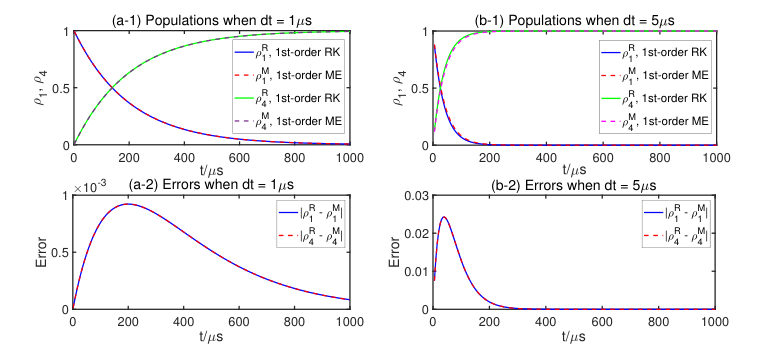
<figcaption class="paper-figure-caption"><b>Fig 1.</b> Fig. 4.1. Comparisons between the first-order Runge-Kutta (RK) method and Magnus expan-</figcaption>
</figure>
<figure class="paper-figure-card">
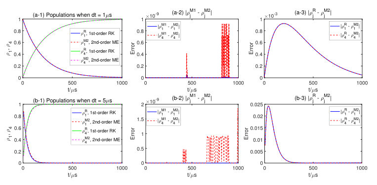
<figcaption class="paper-figure-caption"><b>Fig 2.</b> Fig. 4.2. Comparisons among the first-order Runge-Kutta method, the first-order Magnus</figcaption>
</figure>
<figure class="paper-figure-card">
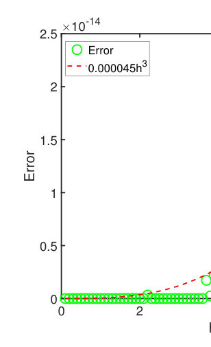
<figcaption class="paper-figure-caption"><b>Fig 3.</b> Fig. 4.3. The truncation error of the first-order Magnus expansion influenced by h.</figcaption>
</figure>
<figure class="paper-figure-card">
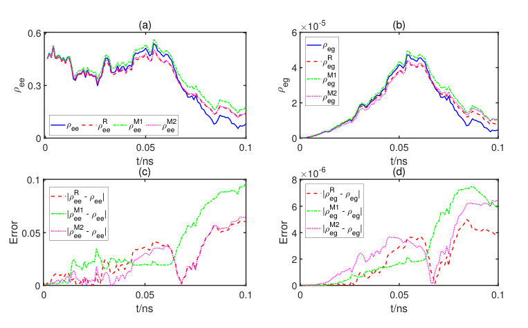
<figcaption class="paper-figure-caption"><b>Fig 4.</b> Fig. 4.4. Numerical simulations on the quantum stochastic dynamics using the first-order</figcaption>
</figure>
</div>

<p><strong>Summary.</strong> This paper develops a Lie algebraic framework to analyze and simulate non-Markovian quantum dynamics. By mapping the density matrix evolution into a high-dimensional linear time-varying system, it applies the Magnus expansion technique. The key contribution is providing detailed error analysis showing how truncation errors depend on non-Markovian effects and the choice of stochastic calculus (Itô vs. Stratonovich) during measurement.</p>
<p><strong>Why it may be interesting.</strong> This work provides advanced mathematical tools (Lie algebra, Magnus expansion) to tackle the notoriously difficult problem of non-Markovian dynamics in quantum computing contexts, offering rigorous error analysis that is crucial for developing reliable quantum simulators.</p>
<details>
<summary>Detailed structure</summary>
<p><strong>Main problem.</strong> The paper addresses the challenge of accurately simulating non-Markovian quantum dynamics, particularly when measurement noise is involved.</p>
<p><strong>Main result.</strong> It demonstrates that the Magnus expansion can efficiently simulate these complex dynamics, and it rigorously quantifies how truncation errors depend on the underlying Lie algebraic structure and whether the stochastic process is modeled using Itô or Stratonovich calculus.</p>
<p><strong>Method.</strong> The core methodology involves vectorizing the density matrix to transform the evolution into a high-dimensional linear time-varying equation in Liouville space, which is then solved using the Magnus expansion technique derived from Lie algebra theory.</p>
<p><strong>Model / system.</strong> The model describes an open quantum system interacting with an environment. The dynamics are governed by equations that transition from standard Lindblad forms to complex stochastic differential equations (SDEs) when measurement/filtering is included.</p>
<p><strong>Key observables.</strong> Truncation errors of the first- and second-order Magnus expansions, and the comparison between Itô and Stratonovich noise models in quantum filtering.</p>
<p><strong>Important parameters / regimes.</strong> The step size ($h$) for numerical integration, and the time scale relative to non-Markovian interaction timescales.</p>
<p><strong>Assumptions / limitations.</strong> The analysis relies on approximating higher-order terms of the Magnus expansion using Taylor series expansions around a midpoint, and assumes bounded time-varying amplitudes in the Liouville equation representation.</p>
<p><strong>Figures summary.</strong> Numerical simulations compare ideal evolution trajectories against results from first-order Runge-Kutta (RK) methods and second-order Magnus expansions, showing good agreement only for very short simulation times.</p>
<p><strong>Paper structure.</strong> The paper builds theoretically by representing non-Markovian dynamics as linear time-varying equations in the Liouville space using a Lie algebraic basis. It then applies and analyzes the convergence properties of the Magnus expansion for both deterministic and stochastic (Itô/Stratonovich) regimes, concluding with numerical validation.</p>
</details>
<details>
<summary>Abstract</summary>
<p>In this paper, we study the non-Markovian quantum dynamics in quantum computations from the perspective of a Lie algebraic approach based on numerical analysis. By vectorizing the density matrix of quantum states, the non-Markovian evolutions can be represented with high-dimensional linear time-varying equations, where the time-varying parameters arise from the non-Markovian interactions between the quantum system and environment. We study the Magnus expansion of such linear time-varying quantum dynamics and clarify how the truncation errors for the first- and second-order Magnus expansions are influenced by the non-Markovian properties. Besides, when the quantum states are measured for filtering, the dynamics can be modeled as time-varying stochastic differential equations due to the existence of measurement noise. The Magnus expansions based on quantum stochastic filtering are different when the quantum measurement noises are modeled in an {Itô} or Stratonovich approach, rendering different truncation errors. Based on this, numerical simulations further demonstrate the efficiency of Magnus expansions in simulating non-Markovian quantum dynamics without or with stochasticity, and how the truncation errors are influenced by the Lie algebras in the Liouville space.</p>
</details>
<p><sub><a href="#top">↑ back to top</a></sub></p>

<p><a id="paper-2607.14073"></a></p>
<h3 id="an-exactly-solvable-macroscopic-fluctuation-theory-of-single-file-diffusion"><a href="http://arxiv.org/abs/2607.14073v1">An exactly solvable macroscopic fluctuation theory of single-file diffusion</a></h3>
<p><strong>Authors:</strong> Sandeep Jangid, Soumyabrata Saha, Kapil Sharma, Jitendra Kethepalli, Benjamin Guiselin, Jacopo De Nardis, Tridib Sadhu<br>
<strong>Type:</strong> theory · <strong>Category:</strong> statistical mechanics · <strong>PDF:</strong> <a href="https://arxiv.org/pdf/2607.14073v1">https://arxiv.org/pdf/2607.14073v1</a><br>
<strong>Analysis basis:</strong> full PDF text, analyzed in chunks
<strong>Topic relevance:</strong> 🔥 <code>non-equilibrium dynamics</code> <strong>4/5</strong> · <code>methods for driven-dissipative</code> <strong>3/5</strong> · <code>non-equilibrium universality</code> <strong>3/5</strong> · <code>driven-dissipative phase transition</code> <strong>2/5</strong> · <code>Frenkel-Kontorova</code> <strong>1/5</strong> · <code>Keldysh / 2PI / non-Gaussian methods</code> <strong>1/5</strong></p>
<div class="figure-strip-hint">↔ Scroll figures horizontally</div>
<div class="paper-figures-scroll">
<figure class="paper-figure-card">
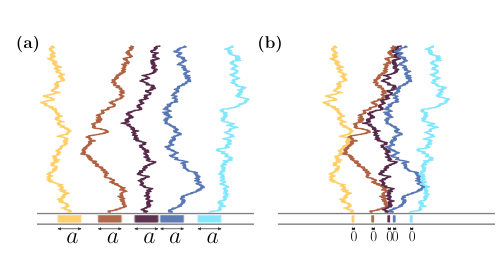
<figcaption class="paper-figure-caption"><b>Fig 1.</b> Figure 1. Schematic trajectories of Brownian hard rods (a) of finite-size a and (b) in the zero-size limit, a →0. The canonical transformation (see (13)) maps (a) onto (b).</figcaption>
</figure>
<figure class="paper-figure-card">
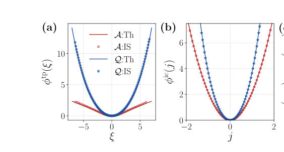
<figcaption class="paper-figure-caption"><b>Fig 2.</b> Figure 2. (a,b) LDFs for (a) tracer-position and (b) integrated-current, defined by ϕ(o) = −1 √</figcaption>
</figure>
</div>

<p><strong>Summary.</strong> This paper provides an exact solution to the macroscopic fluctuation theory governing single-file diffusion using the Brownian Hard Rod model. The authors achieve this by applying a canonical transformation that maps the complex interacting system onto a solvable point-particle description. This yields explicit, universal large-deviation statistics for observables like tracer position and integrated current in both annealed and quenched environments.</p>
<p><strong>Why it may be interesting.</strong> The techniques used—mapping complex interacting systems (like BHR) onto exactly solvable point-particle models via canonical transformations—are highly relevant for understanding non-equilibrium dynamics in quantum many-body systems where exact solutions are rare.</p>
<details>
<summary>Detailed structure</summary>
<p><strong>Main problem.</strong> The paper aims to develop an exactly solvable macroscopic fluctuation theory (MFT) for single-file diffusion, a process common in low-dimensional systems.</p>
<p><strong>Main result.</strong> They show that the MFT for the extended Brownian Hard Rod gas is exactly solvable via a canonical transformation, yielding explicit large-deviation statistics for key observables.</p>
<p><strong>Method.</strong> The core method involves mapping the fluctuating hydrodynamic equation governing the density field onto an exactly solvable point-particle system using a canonical transformation. Large deviation functions and scaled cumulant generating functions are calculated in both annealed and quenched ensembles.</p>
<p><strong>Model / system.</strong> The primary model is single-file diffusion, modeled by a one-dimensional gas of extended Brownian Hard Rods (BHR). The theory is generalized to lattice gases with finite-volume exclusion.</p>
<p><strong>Key observables.</strong> Tracer-position ($z_t$), integrated-current ($Q_t$), and the local-height observable $h(z)_t$.</p>
<p><strong>Important parameters / regimes.</strong> Hard rod length ($a$), bare diffusion coefficient ($D_0=1$), time scaling ($\sqrt{t}$), and ensemble type (annealed vs. quenched).</p>
<p><strong>Assumptions / limitations.</strong> The analysis relies on the large-time asymptotic behavior of fluctuations, characterized by saddle-point approximations in the path integral formalism.</p>
<p><strong>Figures summary.</strong> Figures schematically illustrate BHR trajectories, show LDFs for tracer-position and integrated-current comparing theory to simulation, and display optimal density profile evolution associated with specific SCGF variables.</p>
<p><strong>Paper structure.</strong> The paper builds from establishing the continuum model (BHR) and its hydrodynamic description. It then introduces the canonical transformation that renders the MFT solvable. Finally, it derives explicit formulas for the SCGFs of tracer-position and integrated-current, comparing results across different ensembles and showing connections to local-height statistics.</p>
</details>
<details>
<summary>Abstract</summary>
<p>Single-file diffusion is a ubiquitous phenomenon in low-dimensional systems, arising in transport inside narrow channels. Its natural continuum model is a one-dimensional gas of extended Brownian hard rods (BHR). Perhaps owing to the perceived intractability of this problem, much of the literature has traditionally focused on lattice exclusion models, where integrability methods have yielded remarkable, albeit limited, exact results. A major recent advance comes from a formal solution of macroscopic fluctuation theory (MFT) for the exclusion process. Yet, despite the formal solution, only a handful of properties have been made explicit. We show that the corresponding MFT of the extended BHR gas is in fact exactly solvable through a canonical transformation. We demonstrate this by explicit computation of the large-deviation statistics of the tracer-position and integrated-current in both annealed and quenched ensembles. We further show that an analogous canonical transformation applies to the MFT of lattice gases with finite-volume exclusion, yielding corresponding tracer and current statistics. We validate our results using rare-event simulations for both the continuum and the lattice models.</p>
</details>
<p><sub><a href="#top">↑ back to top</a></sub></p>

<p><a id="paper-2607.14012"></a></p>
<h3 id="temporal-entanglement-from-twist-correlators-in-2d-conformal-field-theory-and-holography"><a href="http://arxiv.org/abs/2607.14012v1">Temporal Entanglement from Twist Correlators in 2d Conformal Field Theory and Holography</a></h3>
<p><strong>Authors:</strong> Alice Bernamonti, Federico Galli, Michal P. Heller, Fabio Ori, Alexandre Serantes<br>
<strong>Type:</strong> theory · <strong>Category:</strong> statistical mechanics · <strong>PDF:</strong> <a href="https://arxiv.org/pdf/2607.14012v1">https://arxiv.org/pdf/2607.14012v1</a><br>
<strong>Analysis basis:</strong> full PDF text, analyzed in chunks
<strong>Topic relevance:</strong> 🔥 <code>entanglement &amp; information structure</code> <strong>4/5</strong> · <code>non-equilibrium dynamics</code> <strong>3/5</strong> · <code>non-equilibrium universality</code> <strong>2/5</strong> · <code>Keldysh / 2PI / non-Gaussian methods</code> <strong>1/5</strong> · <code>analog quantum simulation</code> <strong>1/5</strong> · <code>correlated / nonlocal dissipation</code> <strong>1/5</strong> · <code>driven-dissipative phase transition</code> <strong>1/5</strong> · <code>methods for driven-dissipative</code> <strong>1/5</strong></p>
<div class="figure-strip-hint">↔ Scroll figures horizontally</div>
<div class="paper-figures-scroll">
<figure class="paper-figure-card">

<figcaption class="paper-figure-caption"><b>Fig 1.</b> Figure 1: (Left) In blue, the wall surface of the Bañados geometry where det g = 0 for z1 −z2 = ℓ= 5 and Rényi index n = 4. (Right) For canonical insertions z1 = 0, z2 = ∞, the wall is a cone emanating from the origin.</figcaption>
</figure>
<figure class="paper-figure-card">

<figcaption class="paper-figure-caption"><b>Fig 2.</b> Figure 2: (Left) The wall (2.37) depicted in EAdS3 emanating from w = 0 on the boundary. Here we set n = 4 and used canonical insertions z1 = 0, z2 = ∞. In red dashed, the AdS geodesic that connects w = 0 and w = ∞on the boundary. In light green, the periodic identifications. (Right) A section of the bulk wedge of opening angle 2π/n. The Bañados coordinates only cover the region between the boundary and the wall of eq. (2.37), in blue solid. In black dashed, an illustration of the action of the diffeomorphism for z¯z = 1.</figcaption>
</figure>
<figure class="paper-figure-card">

<figcaption class="paper-figure-caption"><b>Fig 3.</b> Figure 3: Analytic continuation of the two-point function of twist operators. Each light- cone crossing changes the phase of the Lorentzian invariant entering the twist correlator (3.6) by e±iπ. The sign depends on the direction of the crossing, as represented in the figure for the time-ordered case.</figcaption>
</figure>
<figure class="paper-figure-card">

<figcaption class="paper-figure-caption"><b>Fig 4.</b> Figure 4: Schematic evolution of the holomorphic cross ratio z in the complex plane for the case x0 &gt; 0. At t ≈x0, σn crosses the lightcones of the two ψ insertions, causing z to wind clockwise around the origin and move onto the adjacent sheet according to the monodromy z →e−2πiz. At t ≈x0 + ∆x, ˜σn crosses the same lightcones, and z retraces its path back to the principal sheet. The right panel illustrates the phases acquired by the coordinate differences entering the definition of the cross ratio.</figcaption>
</figure>
<figure class="paper-figure-card">

<figcaption class="paper-figure-caption"><b>Fig 5.</b> Figure 5: Real part of the TEE in the Vaidya-like quench with mass profile (5.32) for different values of γ, expressed as a function of the mean time t = 1</figcaption>
</figure>
</div>

<p><strong>Summary.</strong> This paper develops a rigorous framework to calculate temporal entanglement entropy in 2D CFTs by analytically continuing replica twist correlators from Euclidean to Lorentzian time. Holographically, this translates into finding complex geodesics in AdS space that match the field theory results across various physical quenches and states.</p>
<p><strong>Why it may be interesting.</strong> This work provides a powerful extension of entanglement concepts into time-dependent regimes (Lorentzian signature), which is crucial for understanding non-equilibrium dynamics in strongly coupled quantum systems relevant to AMO physics and open quantum systems.</p>
<details>
<summary>Detailed structure</summary>
<p><strong>Main problem.</strong> The primary goal is formulating and calculating timelike entanglement entropy (TEE) and its Rényi extension in 2D Conformal Field Theory (CFT) and establishing its holographic dual description.</p>
<p><strong>Main result.</strong> The authors provide a systematic field-theoretic construction using analytic continuation of replica twist correlators, which yields explicit agreement with complex geodesic calculations in holography for various physical scenarios.</p>
<p><strong>Method.</strong> The methodology involves analytically continuing Euclidean replica twist correlators to time-ordered, timelike-separated insertions in CFT. Holographically, this translates to identifying and selecting specific complex geodesics in the bulk AdS geometry that minimize the real part of their length.</p>
<p><strong>Model / system.</strong> The work applies to 2D CFTs considering temporal subregions of arbitrary extent, with holographic duals modeled by Anti-de Sitter (AdS) spacetimes, including specific backgrounds like AdS-Vaidya geometry. The analysis covers quantum operator quenches and excited states.</p>
<p><strong>Key observables.</strong> Timelike Entanglement Entropy ($S(T)$), Rényi entanglement entropy, complex-valued entropies (pseudoentropies), and the imaginary part of the entropy.</p>
<p><strong>Important parameters / regimes.</strong> Rényi index $n$, time separation $\Delta t$, and parameters defining the specific AdS background geometry.</p>
<p><strong>Assumptions / limitations.</strong> The approach relies on analytic continuation from Euclidean to Lorentzian signature and utilizes a geodesic approximation in the bulk spacetime, which is necessary because no real geodesic connects timelike-separated points on the boundary.</p>
<p><strong>Figures summary.</strong> Figure 11 (referenced in notes) compares numerical solutions for correlators against analytical forms derived from AdS and BTZ geometries, demonstrating consistency under specific limiting procedures.</p>
<p><strong>Paper structure.</strong> The paper systematically develops the field-theoretic definition of TEE via replica twist correlators, extends this to Rényi indices $n>1$, derives the corresponding complex extremal surface prescription in holography, and validates these results across multiple physical examples like quenches and excited states.</p>
</details>
<details>
<summary>Abstract</summary>
<p>We formulate timelike entanglement entropy and its Rényi extension in two-dimensional conformal field theory through the analytic continuation of replica twist correlators to time-ordered, timelike-separated insertions. This field-theoretic construction grounds and generalizes recent developments, and applies to temporal subregions of arbitrary extent. Within three-dimensional holography, the semiclassical boundary correlator identifies boundary-anchored complex geodesics as the relevant bulk saddles and selects the one with the smallest real part of the length. This provides a direct boundary derivation of the proposed complex extremal surface prescription and extends to Rényi index $n>1$, for which we explicitly construct the corresponding complex cosmic brane geometry in the vacuum. We develop these ideas in several representative settings, including locally and globally excited states and quantum operator quenches, making manifest the precise agreement between boundary twist correlator and bulk complex geodesic calculations. For AdS-Vaidya, our approach predicts a different result from earlier piecewise geodesic constructions, while reproducing the field theory answer. Across these examples, the operator ordering uniquely determines the imaginary part of the complex-valued entropy, which is quantized in units of $cπ/6$ and sensitive to the effective causal structure but not to the underlying dynamics.</p>
</details>
<p><sub><a href="#top">↑ back to top</a></sub></p>

<p><a id="paper-2607.14085"></a></p>
<h3 id="benchmarking-trigonometric-continuous-variable-gate-primitives-with-trapped-ions"><a href="http://arxiv.org/abs/2607.14085v1">Benchmarking trigonometric continuous-variable gate primitives with trapped ions</a></h3>
<p><strong>Authors:</strong> Tommaso Rainaldi, Jake Montgomery, Christopher G. Yale, Brian K. McFarland, Melissa C. Revelle, Daniel Lobser, Edward C. Tortorici, Susan Clark, George Siopsis, Matt Grau, Felix Ringer<br>
<strong>Type:</strong> experiment · <strong>Category:</strong> other · <strong>PDF:</strong> <a href="https://arxiv.org/pdf/2607.14085v1">https://arxiv.org/pdf/2607.14085v1</a><br>
<strong>Analysis basis:</strong> full PDF text, analyzed in chunks
<strong>Topic relevance:</strong> 🔥 <code>QC/QI experiment</code> <strong>4/5</strong> · <code>analog quantum simulation</code> <strong>2/5</strong> · <code>entanglement &amp; information structure</code> <strong>2/5</strong> · <code>quantum measurements</code> <strong>2/5</strong> · <code>methods for driven-dissipative</code> <strong>1/5</strong> · <code>non-equilibrium dynamics</code> <strong>1/5</strong> · <code>quantum optics experiment</code> <strong>1/5</strong></p>
<div class="figure-strip-hint">↔ Scroll figures horizontally</div>
<div class="paper-figures-scroll">
<figure class="paper-figure-card">

<figcaption class="paper-figure-caption"><b>Fig 1.</b> FIG. 1: Trapped ion radial-mode spectroscopy and mode participation. Top row: measured detection probabilities for each qubit as a function of the lower-manifold radial-mode frequency for three-ion (left) and four-ion (right) chains. The resonances identify the collective radial motional modes, labeled by mode index and character. Bottom row: simulated Lamb-Dicke factors ηj,k for the modes used in the one-qumode (three-ion) experiment, k = 1 (tilt), and the two-qumode experiment (four-ion), k = 3 (zig-zag) and k = 2 (drum). Colored markers indicate the probe and gate qubits used in each implementation, and the gray markers denote the remaining ions.</figcaption>
</figure>
<figure class="paper-figure-card">

<figcaption class="paper-figure-caption"><b>Fig 2.</b> FIG. 2: Wigner function of the single-qumode cosine gate acting on the Fock vacuum state |0⟩for different values of θ = 0, 0.8, 3 and fixed parameter c = 1 (upper row), c = 2 (lower row).</figcaption>
</figure>
<figure class="paper-figure-card">

<figcaption class="paper-figure-caption"><b>Fig 3.</b> FIG. 3: Wigner function of the single-qumode cosine gate acting on the Fock state |1⟩for different θ values and fixed parameter c = 2.</figcaption>
</figure>
<figure class="paper-figure-card">

<figcaption class="paper-figure-caption"><b>Fig 4.</b> FIG. 4: Evolution of the mana starting in the zero Fock state under the cosine gate evolution as a function of θ for different choices of c. In both panels, we show the bound obtained in the small and large-θ limit, respectively. The left panel compares the Wigner logarithmic negativity obtained using the exact gate with that of its approximation described in Sec. V A.</figcaption>
</figure>
<figure class="paper-figure-card">

<figcaption class="paper-figure-caption"><b>Fig 5.</b> FIG. 5: Circuit that approximates the action of the trigonometric operator e−iθ cos(cˆx) on a qumode state |ψ⟩up to order O(θ2) using one ancillary gate qubit. The argument of the conditional displacement is CDx = CDx(ic/(2 √</figcaption>
</figure>
</div>

<p><strong>Summary.</strong> The research experimentally benchmarks trigonometric continuous-variable quantum gates using trapped ions. By characterizing these elementary cosine gates at the level of individual operations, the authors demonstrate their utility as fundamental building blocks. This advances the feasibility of implementing complex bosonic simulations and hybrid quantum algorithms on current hardware platforms.</p>
<p><strong>Why it may be interesting.</strong> This work directly bridges advanced quantum information theory (CV gate sets) with state-of-the-art trapped-ion hardware, providing crucial empirical data on non-polynomial gates essential for simulating complex many-body physics.</p>
<details>
<summary>Detailed structure</summary>
<p><strong>Main problem.</strong> The paper aims to experimentally benchmark trigonometric continuous-variable (CV) gate primitives, which are necessary for simulating complex bosonic dynamics.</p>
<p><strong>Main result.</strong> Trigonometric CV gates are established as reusable building blocks for hybrid quantum algorithms and bosonic Hamiltonian simulations requiring non-polynomial operations.</p>
<p><strong>Method.</strong> The authors performed gate-level characterization by measuring Fock-space transition probabilities on the QSCOUT trapped-ion platform, comparing finite-step circuits against ideal evolution.</p>
<p><strong>Model / system.</strong> The physical system is a trapped-ion chain ($   ext{}^{171} ext{Yb}^+$) utilizing collective motional modes (qumodes) alongside hyperfine states acting as qubits. The gates are implemented via hybrid qubit-qumode operations.</p>
<p><strong>Key observables.</strong> Fock-space transition probabilities, Wigner function, Negativity, and Characteristic functions.</p>
<p><strong>Important parameters / regimes.</strong> Gate parameters ($c$), Trotter step number, thermal initialization effects, and motional dephasing rates.</p>
<p><strong>Assumptions / limitations.</strong> The study compares finite-step circuit approximations against ideal trigonometric evolution while accounting for experimental imperfections like thermal noise and dephasing.</p>
<p><strong>Figures summary.</strong> Figures illustrate measured detection probabilities for radial motional modes in three- and four-ion chains, relating to the implementation of collective motional gates.</p>
<p><strong>Paper structure.</strong> The paper progresses from discussing CV-DV universality (Section II) to introducing the trapped-ion platform (Section III), analyzing ideal one- and two-qumode cosine gates using phase-space diagnostics (Section IV), detailing finite-step circuit realization (Section V), presenting experimental measurements (Section VI), and concluding (Section VII).</p>
</details>
<details>
<summary>Abstract</summary>
<p>Hybrid continuous-discrete-variable quantum processors can represent bosonic degrees of freedom directly in oscillator modes, or qumodes, while using qubits for control, readout, and nonlinear operations. Recently proposed trigonometric continuous-variable (CV) gate sets promote periodic functions of oscillator quadratures to elementary operations, making them natural primitives for compact variables, rotor models, lattice gauge theories, and anharmonic dynamics. Here we experimentally demonstrate and benchmark one-qumode cosine gates, and perform a mode-resolved marginal benchmark of two-qumode cosine-gate implementations, on the QSCOUT trapped-ion quantum platform. Our implementation uses collective motional modes of three- and four-ion $^{171}{\rm Yb}^{+}$ chains and realizes finite-step trigonometric-gate circuits through hybrid qubit-qumode operations and conditional phase-space displacements. In contrast to previous theoretical and compilation work, we focus on the gate-level characterization of the trigonometric primitives. We measure Fock-space transition probabilities, study their dependence on gate parameters and Trotter step number, and compare with simulations incorporating thermal initialization and motional dephasing. We also derive ideal gate matrix elements and phase-space diagnostics, connecting the measurements to the non-Gaussian structure generated by these gates. These results establish trigonometric CV gates as reusable building blocks for bosonic Hamiltonian simulations and hybrid quantum algorithms requiring intrinsically non-polynomial operations.</p>
</details>
<p><sub><a href="#top">↑ back to top</a></sub></p>

<p><a id="paper-2607.13150"></a></p>
<h3 id="emulating-xx-catalysts-for-quantum-annealing-via-self-consistent-transverse-fields"><a href="http://arxiv.org/abs/2607.13150v1">Emulating XX catalysts for quantum annealing via self-consistent transverse fields</a></h3>
<p><strong>Authors:</strong> Mohammadhossein Dadgar, Christopher L. Baldwin<br>
<strong>Type:</strong> theory · <strong>Category:</strong> disordered systems and neural networks · <strong>PDF:</strong> <a href="https://arxiv.org/pdf/2607.13150v1">https://arxiv.org/pdf/2607.13150v1</a><br>
<strong>Analysis basis:</strong> full PDF text, analyzed in chunks
<strong>Topic relevance:</strong> 🔥 <code>analog quantum simulation</code> <strong>4/5</strong> · <code>exotic spin models in light-matter</code> <strong>3/5</strong> · <code>methods for driven-dissipative</code> <strong>2/5</strong> · <code>non-equilibrium dynamics</code> <strong>2/5</strong> · <code>Keldysh / 2PI / non-Gaussian methods</code> <strong>1/5</strong> · <code>driven-dissipative phase transition</code> <strong>1/5</strong></p>
<div class="figure-strip-hint">↔ Scroll figures horizontally</div>
<div class="paper-figures-scroll">
<figure class="paper-figure-card">

<figcaption class="paper-figure-caption"><b>Fig 1.</b> FIG. 1. Sketch of the self-consistent protocol for emulating fully-connected transverse interactions. We add an additional transverse field Γ(t) to the Hamiltonian (orange curve) instead of the transverse interactions. At equally spaced intervals (dashed lines), we estimate the average x-magnetization (blue curve) and set Γ(t) equal to that value for the subsequent interval. Note that more sophisticated interpolation schemes for Γ(t) are also possible (see Appendix B).</figcaption>
</figure>
<figure class="paper-figure-card">

<figcaption class="paper-figure-caption"><b>Fig 2.</b> FIG. 2. Ground-state z-magnetization in the p-spin model with a transverse field and transverse interactions (i.e., Eq. (2) using Eq. (8) for H0), specifically for p = 3 and h = 1. See Appendix C for details of the calculation. The red line indicates the protocol path that we follow in the numerical simulations — note that no phase transitions occur along that path or anywhere in the parameter space.</figcaption>
</figure>
<figure class="paper-figure-card">

<figcaption class="paper-figure-caption"><b>Fig 3.</b> FIG. 3. Dynamics of the z-magnetization under ED (blue) and SCE (orange), for the p-spin model with p = 3 and h = 1. The annealing schedule is s(t) = λ(t) = t/T, and the runtime is T = 25. The three panels differ only in the system size — N = 25 (left), N = 100 (center), and N = 400 (right).</figcaption>
</figure>
<figure class="paper-figure-card">

<figcaption class="paper-figure-caption"><b>Fig 4.</b> FIG. 4. Error between ED and SCE, ∆z ED/SCE, as a function of N (left) and T (right). The problem Hamiltonian again has p = 3 and h = 1, and the annealing schedule is s(t) = λ(t) = t/T.</figcaption>
</figure>
<figure class="paper-figure-card">

<figcaption class="paper-figure-caption"><b>Fig 5.</b> FIG. 5. Error between SCE and SCD, ∆z SCE/SCD, as a function of the waiting time w used in SCD (system size is N = 100 and the problem Hamiltonian again has p = 3 and h = 1). The left panel shows ∆z SCE/SCD for all values of w considered at T = 25, while the right panel is zoomed in to the small-w regime and shows multiple values of T.</figcaption>
</figure>
</div>

<p><strong>Summary.</strong> The paper addresses the experimental difficulty of implementing transverse interaction catalysts in quantum annealing. It proposes and rigorously analyzes self-consistent field protocols that emulate these effects using only measurements in the transverse basis. The results confirm that these approximations are highly accurate, making the technique a viable alternative for current quantum annealers.</p>
<p><strong>Why it may be interesting.</strong> This work provides a concrete, implementable theoretical framework for simulating complex quantum interactions (like those found in spin glasses) on near-term hardware by mapping difficult terms onto controllable single-parameter controls.</p>
<details>
<summary>Detailed structure</summary>
<p><strong>Main problem.</strong> The primary challenge is emulating the effects of fully-connected transverse interactions, which act as catalysts in quantum annealing but are experimentally difficult to implement directly.</p>
<p><strong>Main result.</strong> A self-consistent transverse field protocol can successfully emulate these catalyst dynamics, establishing it as a viable alternative for near-term quantum annealers by quantifying and minimizing approximation errors.</p>
<p><strong>Method.</strong> The authors introduce several self-consistent protocols (SCE, SCD, SCM) that replace the direct interaction term with an iteratively determined transverse field $\Gamma(t)$, analyzed via large-$N$ limit calculations and numerical simulations.</p>
<p><strong>Model / system.</strong> The work focuses on quantum annealing applied to spin glass models, specifically using the $p$-spin model Hamiltonian. The dynamics are governed by time-dependent Hamiltonians involving both $\sigma_z$ (problem) and $\sigma_x$ (transverse field/catalyst) terms.</p>
<p><strong>Key observables.</strong> Average z-magnetization ($m_z(t)$), average x-magnetization ($\langle\hat{\sigma}_x^i
angle$), and the error metric ($\Delta z$) comparing different simulation protocols.</p>
<p><strong>Important parameters / regimes.</strong> System size ($N$), annealing parameters ($s, \lambda$), waiting time interval ($w$), number of measurements ($k$), and total evolution time ($T$).</p>
<p><strong>Assumptions / limitations.</strong> The core assumption is that the dynamics can be accurately captured by replacing the interaction term with a self-consistently determined transverse field. The protocol's performance degrades at large $T$.</p>
<p><strong>Figures summary.</strong> Figures illustrate error comparisons ($\Delta z$) between Exact Diagonalization (ED) and various self-consistent protocols (SCE, SCD, SCM) across different parameter regimes, showing how errors scale with system size or approximation parameters.</p>
<p><strong>Paper structure.</strong> The paper first introduces the problem of emulating transverse catalysts. It then develops and compares multiple self-consistent protocols (SCE, SCD, SCM), rigorously proving their equivalence to the original dynamics in the large-$N$ limit for SCE. Finally, it analyzes the error scaling of these approximations across different physical regimes, including phase transitions.</p>
</details>
<details>
<summary>Abstract</summary>
<p>Fully-connected transverse interactions have been considered as catalysts for quantum annealing that could mitigate exponentially small gaps and circumvent first-order phase transitions, but their experimental implementation remains challenging. In this work, we introduce a procedure for emulating their effects via a self-consistent transverse field. All that is required beyond conventional transverse-field annealing is the ability to make measurements in the transverse ($\hatσ^x$) basis. We show that this protocol yields identical dynamics in the large-system limit, and study the approach to that limit in numerical simulations of the (uniform) $p$-spin model. However, realizing the protocol in practice requires us to consider a series of approximate variants, each of whose errors we quantify and demonstrate can be made sufficiently small. Lastly, we show how to map the protocol onto annealing platforms that vary only a single control parameter. Even after the multiple stages of approximation, our procedure can generate dynamics that agree well with the original transverse-interaction catalyst, establishing self-consistent transverse fields as a viable alternative on near-term quantum annealers.</p>
</details>
<p><sub><a href="#top">↑ back to top</a></sub></p>

<p><a id="paper-2607.13134"></a></p>
<h3 id="magic-without-a-phase-phase-independent-stabilizer-renyi-entropy-in-gluon-scattering"><a href="http://arxiv.org/abs/2607.13134v1">Magic without a phase: phase-independent stabilizer Rényi entropy in gluon scattering</a></h3>
<p><strong>Authors:</strong> Jinwei Chu, Savan Kharel<br>
<strong>Type:</strong> theory · <strong>Category:</strong> other · <strong>PDF:</strong> <a href="https://arxiv.org/pdf/2607.13134v1">https://arxiv.org/pdf/2607.13134v1</a><br>
<strong>Analysis basis:</strong> full PDF text, analyzed in chunks
<strong>Topic relevance:</strong> 🔥 <code>entanglement &amp; information structure</code> <strong>4/5</strong> · <code>non-equilibrium dynamics</code> <strong>2/5</strong> · <code>Keldysh / 2PI / non-Gaussian methods</code> <strong>1/5</strong> · <code>analog quantum simulation</code> <strong>1/5</strong> · <code>correlated / nonlocal dissipation</code> <strong>1/5</strong> · <code>driven-dissipative phase transition</code> <strong>1/5</strong> · <code>methods for driven-dissipative</code> <strong>1/5</strong> · <code>non-equilibrium universality</code> <strong>1/5</strong></p>
<div class="figure-strip-hint">↔ Scroll figures horizontally</div>
<div class="paper-figures-scroll">
<figure class="paper-figure-card">

<figcaption class="paper-figure-caption"><b>Fig 1.</b> Figure 1. The second stabilizer Rényi entropy M2 for the two-coefficient state Eq. (2.3), as a function of the amplitude ratio r. The entropy vanishes at r = 0 (a trivial state) and at r = 1 (the Bell state), showing that entanglement alone does not imply magic. The maximum ln(4/3) ≈0.288 is attained at r = √</figcaption>
</figure>
<figure class="paper-figure-card">

<figcaption class="paper-figure-caption"><b>Fig 2.</b> Figure 1 plots Eq. (2.4) as a function of r. Due to the symmetry under r →−r or r →1/r, it is sufficient to focus on the region r ∈[0, 1]. In this fundamental region, the function vanishes at r = 0 and r = 1. The first zero, |ψ⟩0 = |−+⟩, is trivial. The second is more telling. The state |ψ⟩1 = (|+−⟩+ |−+⟩)/ √</figcaption>
</figure>
<figure class="paper-figure-card">

<figcaption class="paper-figure-caption"><b>Fig 3.</b> Figure 2. The second stabilizer Rényi entropy M2 for the two-coefficient state Eq. (2.7), plotted against r at several values of the admixture parameter c. Even a modest c produces magic that comfortably exceeds the c = 0 bound ln(4/3) ≈0.288 from Eq. (2.6).</figcaption>
</figure>
<figure class="paper-figure-card">

<figcaption class="paper-figure-caption"><b>Fig 4.</b> Figure 3. The second U(1)k-invariant stabilizer Rényi entropies M2 and f M2 for the two-coefficient state Eq. (2.3), as a function of the amplitude ratio r. f M2 has a global minimum (where it vanishes) at r = 0, a local minimum at r = 1, and a global maximum at r = ( √</figcaption>
</figure>
<figure class="paper-figure-card">

<figcaption class="paper-figure-caption"><b>Fig 5.</b> Figure 4. A gluon’s two helicity states |+⟩and |−⟩furnish a single qubit, and the helicity amplitude is the wavefunction the scattering prepares. A k-gluon final state is correspondingly a k-qubit state.</figcaption>
</figure>
</div>

<p><strong>Summary.</strong> This paper develops a phase-independent generalization of 'magic' using stabilizer Rényi entropy to quantify non-stabilizerness. It applies this tool to tree-level gluon scattering, demonstrating that the resulting measure is robust against local basis choices and yields specific quantitative predictions for different scattering channels.</p>
<p><strong>Why it may be interesting.</strong> Although focused on high-energy physics (gluon scattering), the core mathematical technique—defining a robust, physically meaningful resource measure invariant under local gauge/phase transformations—is highly relevant for analyzing entanglement and complexity in open quantum systems or condensed matter models where such ambiguities arise.</p>
<details>
<summary>Detailed structure</summary>
<p><strong>Main problem.</strong> The paper aims to generalize the concept of 'magic' (non-stabilizerness) by formulating a measure that is invariant under local phase ambiguities in the computational basis.</p>
<p><strong>Main result.</strong> They find specific quantitative results for gluon scattering, showing that the phase-independent magic can be larger than limits set by simpler processes and that color dependence cancels out entirely.</p>
<p><strong>Method.</strong> The authors define and calculate a generalized, phase-independent stabilizer Rényi entropy ($\langle M_q 
angle$) by averaging the standard measure over the local basis-phase $U(1)^k$ orbit.</p>
<p><strong>Model / system.</strong> The primary physical testbed is tree-level gluon scattering amplitudes, where outgoing helicities are interpreted as qubits forming a multi-qubit Hilbert space. The analysis compares results for $2	o 2$, $3	o 2$, and $2	o 3$ processes.</p>
<p><strong>Key observables.</strong> Phase-independent stabilizer Rényi entropy ($\langle M_q 
angle$), Magic (non-stabilizerness), Gluon scattering amplitudes.</p>
<p><strong>Important parameters / regimes.</strong> Scattering process multiplicities ($2	o 2$, $3	o 2$, $2	o 3$); the index $q$ of the Rényi entropy; kinematic configurations (e.g., symmetry of outgoing momenta).</p>
<p><strong>Assumptions / limitations.</strong> The analysis is restricted to tree-level amplitudes, and a key step involves approximating the phase average over the basis-phase orbit.</p>
<p><strong>Figures summary.</strong> Figure 1 plots $M_2$ vs. $r$ for two-qubit states; Figure 2 shows enhancement of $M_2$ with an admixture coefficient $c$; Figure 3 compares the standard $M_2$ to the phase-averaged $\langle M_2 
angle$, confirming it is a lower bound.</p>
<p><strong>Paper structure.</strong> The paper first establishes the standard SRE, then identifies its dependence on local basis phases, and finally applies the corrected, phase-independent measure to analyze specific gluon scattering amplitudes in different processes.</p>
</details>
<details>
<summary>Abstract</summary>
<p>Magic, also known as non-stabilizerness, measures the usefulness of a quantum state for quantum computation. While magic is defined relative to a choice of computational basis, in some physical settings the available data determine this basis only up to local phase conventions. In this paper, we generalize the notion of magic and formulate it in a phase-independent manner, and hence define a generalized stabilizer Rényi entropy. As a case study, we consider higher-multiplicity tree-level gluon scattering, interpreting the outgoing helicities as qubits. In this setting, the helicity data naturally determine a local basis for each qubit but leave a phase ambiguity. For $3\to 2$ scattering, we find that the final-state phase-independent magic is generically larger than the maximum attainable in $2\to 2$ scattering. For $2 \to 3$ scattering, we find a nonzero minimal value approached in the soft limit. Moreover, when the three outgoing momenta become symmetric, the magic approaches a local minimum only a few percent above the soft-limit value. In all cases considered, the color dependence cancels from the phase-independent stabilizer Rényi entropy.</p>
</details>
<p><sub><a href="#top">↑ back to top</a></sub></p>

<p><a id="paper-2607.13873"></a></p>
<h3 id="superconducting-proximity-effect-in-a-strongly-correlated-charge-transfer-insulator"><a href="http://arxiv.org/abs/2607.13873v1">Superconducting proximity effect in a strongly correlated charge-transfer insulator</a></h3>
<p><strong>Authors:</strong> Mengya Ren, Yaoyao Chen, Fudi Zhou, Can Zhang, Zhaoteng Dong, Lili Zhou, Quanzhen Zhang, Huixia Yang, Xiaolong Xu, Yuanxiao Ma, Yu Zhang, Yeliang Wang<br>
<strong>Type:</strong> experiment · <strong>Category:</strong> strongly correlated electrons · <strong>PDF:</strong> <a href="https://arxiv.org/pdf/2607.13873v1">https://arxiv.org/pdf/2607.13873v1</a><br>
<strong>Analysis basis:</strong> full PDF text, analyzed in chunks
<strong>Topic relevance:</strong> 🔥 <code>Kondo &amp; dissipative impurity</code> <strong>4/5</strong> · <code>driven-dissipative phase transition</code> <strong>2/5</strong> · <code>analog quantum simulation</code> <strong>1/5</strong> · <code>correlated / nonlocal dissipation</code> <strong>1/5</strong> · <code>methods for driven-dissipative</code> <strong>1/5</strong> · <code>non-equilibrium dynamics</code> <strong>1/5</strong> · <code>spintronics-quantum-optics interface</code> <strong>1/5</strong></p>
<div class="figure-strip-hint">↔ Scroll figures horizontally</div>
<div class="paper-figures-scroll">
<figure class="paper-figure-card">

<figcaption class="paper-figure-caption"><b>Fig 1.</b> Figure 1. Structural and electronic properties of monolayer H-NbSe2 and T-NbSe2.</figcaption>
</figure>
<figure class="paper-figure-card">

<figcaption class="paper-figure-caption"><b>Fig 2.</b> Figure 2. Superconducting proximity effect in a charge-transfer insulator via a</figcaption>
</figure>
<figure class="paper-figure-card">

<figcaption class="paper-figure-caption"><b>Fig 3.</b> Figure 3. Superconducting proximity effect in a charge-transfer insulator via a</figcaption>
</figure>
<figure class="paper-figure-card">

<figcaption class="paper-figure-caption"><b>Fig 4.</b> Figure 4. Local mangetic moments in a charge-transfer insulator. (a) Atomic</figcaption>
</figure>
</div>

<p><strong>Summary.</strong> This work investigates superconductivity induced in a charge-transfer insulator ($ ext{T-NbSe}_2$) placed near a superconductor ($    ext{H-NbSe}_2$). By creating tunable junctions using STM, the researchers demonstrated that strong coupling leads to robust superconducting proximity effects characterized by Yu-Shiba-Rusinov-like bound states. This establishes a model platform for studying correlated superconductivity.</p>
<p><strong>Why it may be interesting.</strong> The observation of YSR states in a proximity setup involving correlated insulators provides an experimental realization for studying superconducting coupling mediated by localized magnetic moments, which is highly relevant to open quantum systems modeling.</p>
<details>
<summary>Detailed structure</summary>
<p><strong>Main problem.</strong> The study aims to understand the microscopic interplay between superconductivity and strongly correlated insulating states using proximity effects.</p>
<p><strong>Main result.</strong> In a strong-coupling regime, the junction exhibits superconducting gaps comparable to the source material and displays pronounced particle-hole symmetric in-gap bound states consistent with YSR excitations.</p>
<p><strong>Method.</strong> Ultralow-temperature scanning tunnelling microscopy (STM) was used to construct atomically sharp lateral junctions between two phases of NbSe2 and perform site-dependent spectroscopy.</p>
<p><strong>Model / system.</strong> The system utilizes monolayer H-NbSe2 (a CDW metal with Ising superconductivity) and T-NbSe2 (a strongly correlated charge-transfer insulator). Junctions are formed either by weak structural displacement or strong tip-pulse induced phase transition.</p>
<p><strong>Key observables.</strong> Superconducting gap ($\Delta$), in-gap resonance peaks (YSR-like excitations), and Kondo resonances observed via STS.</p>
<p><strong>Important parameters / regimes.</strong> Low temperatures (e.g., 350 mK, 4.2 K); comparison between weak vs. strong coupling regimes.</p>
<p><strong>Assumptions / limitations.</strong> The YSR state formation requires the confluence of a finite density of states at $E_F$, local magnetic moments, and strong exchange coupling in the interfacial region.</p>
<p><strong>Figures summary.</strong> Figures detail structural characterization (CDW superlattices) and junction formation mechanisms (sliding vs. phase transition). STS spectra illustrate gap reduction (weak coupling) versus YSR peak emergence (strong coupling).</p>
<p><strong>Paper structure.</strong> The paper systematically characterizes the two types of junctions (Type-1/Weak, Type-2/Strong), first establishing the structural basis using STM imaging, followed by detailed electronic spectroscopy (STS) to compare gap behavior and identify emergent bound states.</p>
</details>
<details>
<summary>Abstract</summary>
<p>Proximity-induced superconductivity in strongly correlated insulators provides a versatile route for engineering quantum states of matter and artificial systems with tailored functionalities. However, microscopic interplay between superconductivity and correlated insulating states remains poorly understood. Here we use ultralow-temperature scanning tunnelling microscopy (STM) to systemically investigate superconducting proximity effects in a charge-transfer insulator. Via STM tip manipulation, atomically sharp lateral junctions composed of superconducting monolayer H-NbSe2 and charge-transfer insulating monolayer T-NbSe2 are constructed, enabling direct access to tunable coupling regimes. In the weak-coupling regime, there is a robust proximity-induced superconducting gap in T-NbSe2, with a reduced gap value relative to that of H-NbSe2. Upon entering the strong-coupling regime, T-NbSe2 exhibits a superconducting gap comparable to that of H-NbSe2, accompanied by pronounced particle-hole-symmetric in-gap bound states, consistent with Yu-Shiba-Rusinov-like excitations. These findings establish monolayer H/T-NbSe2 lateral junctions as a model platform for elucidating superconducting proximity effects in strongly correlated charge-transfer insulators.</p>
</details>
<p><sub><a href="#top">↑ back to top</a></sub></p>

<p><a id="paper-2607.13397"></a></p>
<h3 id="on-chip-quantum-sensing-of-kondo-spins-in-a-high-mobility-quasi-one-dimensional-nanoconstriction"><a href="http://arxiv.org/abs/2607.13397v1">On-chip quantum sensing of Kondo spins in a high-mobility quasi-one-dimensional nanoconstriction</a></h3>
<p><strong>Authors:</strong> Shun-Tsung Lo, Che-Cheng Wang, Sheng-Chin Ho, Jun-Hao Chang, Ming-Wei Chen, G. L. Creeth, L. W. Smith, Shih-Hsiang Chao, Yu-Chiang Hsieh, Pei-Tzu Wu, Yi-Cheng Wu, Chi-Te Liang, M. Pepper, J. P. Griffiths, I. Farrer, G. A. C. Jones, D. A. Ritchie, Tse-Ming Chen<br>
<strong>Type:</strong> experiment · <strong>Category:</strong> strongly correlated electrons · <strong>PDF:</strong> <a href="https://arxiv.org/pdf/2607.13397v1">https://arxiv.org/pdf/2607.13397v1</a><br>
<strong>Analysis basis:</strong> full PDF text, analyzed in chunks
<strong>Topic relevance:</strong> 🔥 <code>Kondo &amp; dissipative impurity</code> <strong>4/5</strong> · <code>spintronics-quantum-optics interface</code> <strong>2/5</strong> · <code>analog quantum simulation</code> <strong>1/5</strong> · <code>correlated / nonlocal dissipation</code> <strong>1/5</strong> · <code>driven-dissipative phase transition</code> <strong>1/5</strong> · <code>exotic spin models in light-matter</code> <strong>1/5</strong></p>
<div class="figure-strip-hint">↔ Scroll figures horizontally</div>
<div class="paper-figures-scroll">
<figure class="paper-figure-card">

<figcaption class="paper-figure-caption"><b>Fig 1.</b> Figure 1: Integrated electronic resonator-quantum point contact device and its linear and nonlinear transfer characteristics. (a) False-color scanning electron micrograph of the gate pattern for device A. The quantum point contact (QPC) and electronic resonator (ER) are primarily controlled by voltages Vqpc, Ver, and Vf with all other gates grounded. Bottom inset, a schematic representation of the QPC potential profile and an interaction-driven quasi-bound spin. Middle inset, a schematic representation of ER spin states. (b) Linear conductance G as a function of Vqpc with Ver = 0. (c) Linear G as a function of Ver (Vqpc) at the selected Vqpc (Ver). Inset, nonlinear G at three different Ver...</figcaption>
</figure>
<figure class="paper-figure-card">

<figcaption class="paper-figure-caption"><b>Fig 2.</b> Figure 2: Transport anomalies in linear and nonlinear conductance, device A. (a, b) Sequences of linear conductance traces G(Vsd = 0, Vqpc) with decreasing Ver along the arrow direction for Vf = −0.72 V (a) and −0.74 V (b). (c) Transconductance ∂G/∂Vqpc versus G and Ver, displaying the oscillating and monotonic dependence of the first plateau and 0.7 anomaly on Ver, respectively. (d) Nonlinear conductance traces G(Vsd, Vqpc) at various Ver settings. Six circles marked in (a), (c), and (d) indicate the data at six characteristic gate voltages Ver, where the first plateau shows local extremes (solid and open circles for maxima and minima, respectively). These are accompanied by single- and...</figcaption>
</figure>
<figure class="paper-figure-card">

<figcaption class="paper-figure-caption"><b>Fig 3.</b> Figure 3: Interplay of the QPC Kondo and 0.7 anomaly in device A. (a) Linear conductance versus Ver as Vqpc is decreased along the arrow direction with Vf fixed at −0.7 V. Green traces correspond to Vqpc = −1.60 V and −1.77 V, respectively. The plateaus (at GQ and 0.5GQ) appear as darker regions with a higher density of traces. The shaded areas indicate the simultaneous appearance of the conductance oscillations and 0.7 anomaly. (b) Color map of the negative second derivative −∂2G/∂V 2 sd versus Ver and Vsd at Vqpc = −1.60 V. Insets, line cuts of the data at three selected Ver, which give the local minima of their zero-bias values (open circles). Dashed rectangle highlights the region of...</figcaption>
</figure>
<figure class="paper-figure-card">

<figcaption class="paper-figure-caption"><b>Fig 4.</b> Figure 4: Destruction of Kondo spin singlet in device A. (a, b) Double- and single-peak ZBAs with increasing temperature T along the arrow direction. The ZBA peaks are completely suppressed when T = 1.1 K. Dashed and bold traces indicate the data at T = 0.6 K and 1.1 K, respectively. (c, d) Double- and single-peak ZBAs at various in-plane magnetic fields from B = 0 to 5 T in steps of 1 T. The dashed traces indicate the data at B = 3 T.</figcaption>
</figure>
</div>

<p><strong>Summary.</strong> The researchers engineered a novel on-chip device combining a Quantum Point Contact with an electronic resonator to study Kondo spins. By controlling the ER's spin parity, they achieved noninvasive detection of two-impurity Kondo effects via characteristic double-peak Zero-Bias Anomalies. This work clarifies that the Kondo physics is distinct from the origin of the anomalous 0.7 conductance plateau.</p>
<p><strong>Why it may be interesting.</strong> This work provides an exquisite experimental platform for probing fundamental many-body quantum phenomena—specifically, the competition between different types of spin correlations (Kondo vs. $0.7$ anomaly) in nanoscale conductors—which is highly relevant to understanding correlated electron physics in mesoscopic systems.</p>
<details>
<summary>Detailed structure</summary>
<p><strong>Main problem.</strong> The primary challenge is experimentally distinguishing the Kondo screening state from other complex, coexisting many-body spin states within strongly correlated quasi-one-dimensional nanoconstrictions like Quantum Point Contacts (QPCs).</p>
<p><strong>Main result.</strong> The authors demonstrated a noninvasive quantum sensing method by using an integrated electronic resonator (ER) to controllably induce and detect two-impurity Kondo effects, while also showing that the 0.7 anomaly counteracts these fluctuations.</p>
<p><strong>Method.</strong> They utilized lithographically defined all-on-chip devices combining a QPC with an ER in a high-mobility GaAs/AlGaAs heterostructure, measuring linear and nonlinear conductance (Zero-Bias Anomalies) as a function of gate voltages.</p>
<p><strong>Model / system.</strong> The system involves coupling the localized spin moment within a QPC to a tunable spin state residing in an adjacent electronic resonator (ER). This setup allows for the study of two-impurity Kondo physics and its competition with the anomalous 0.7 conductance plateau.</p>
<p><strong>Key observables.</strong> Zero-Bias Anomaly (ZBA) peaks, which change from single-peak to double-peak depending on the ER occupancy parity; linear conductance oscillations related to ER filling; and the magnitude of the $0.7$ anomaly.</p>
<p><strong>Important parameters / regimes.</strong> Temperature ($T$), magnetic field ($B$), gate voltages controlling QPC/ER occupancy, and the ratio of coupling strengths between impurities.</p>
<p><strong>Assumptions / limitations.</strong> The study assumes that the observed ZBA features are robust indicators of Kondo screening, despite the presence of other strong correlation effects like the 0.7 anomaly.</p>
<p><strong>Figures summary.</strong> Figures illustrate the device structure (QPC + ER), show characteristic linear and nonlinear conductance maps, detail how alternating single/double-peak ZBAs correlate with ER filling parity, and demonstrate the suppression of these features upon increasing temperature or magnetic field.</p>
<p><strong>Paper structure.</strong> The paper establishes the physical platform (ER-QPC) to address the ambiguity in spin state identification. It then systematically measures transport properties, using the change in ZBA structure (single vs. double peak) as a diagnostic tool to prove nonlocal control over Kondo screening and differentiate it from the physics causing the 0.7 anomaly.</p>
</details>
<details>
<summary>Abstract</summary>
<p>The precise nature of Kondo spins has remained enigmatic when extended to multiple spin impurities or, more intriguingly, when the localized spin itself may already be the consequence of many-body interactions in a presumably-delocalized open nanoconstriction, such as a quantum point contact (QPC). It is experimentally challenging to distinguish the Kondo state from other coexisting many-body spin states in such a strongly correlated system. Here we lithographically define an all-on-chip electronic resonator (ER) and a QPC in a high-mobility GaAs/AlGaAs heterostructure transistor. Local Kondo screening of the QPC spin and nonlocal spin singlet across the ER-QPC integration are controllable in response to ER occupancy parity. We also show that the 0.7 anomaly, another strongly-correlated state in QPCs, not only has a different physical origin but furthermore counteracts the Kondo spin singlet. These results demonstrate a noninvasive quantum method for sensing spontaneous magnetic impurities within an open nanoconstriction.</p>
</details>
<p><sub><a href="#top">↑ back to top</a></sub></p>

<p><a id="paper-2607.13623"></a></p>
<h3 id="phase-diagram-of-one-dimensional-bosons-with-rydberg-dressed-soft-core-interactions"><a href="http://arxiv.org/abs/2607.13623v1">Phase diagram of one-dimensional bosons with Rydberg-dressed soft-core interactions</a></h3>
<p><strong>Authors:</strong> Shengjie Yu, Laurent Sanchez-Palencia<br>
<strong>Type:</strong> theory · <strong>Category:</strong> quantum gases · <strong>PDF:</strong> <a href="https://arxiv.org/pdf/2607.13623v1">https://arxiv.org/pdf/2607.13623v1</a><br>
<strong>Analysis basis:</strong> full PDF text, analyzed in chunks
<strong>Topic relevance:</strong> 🔥 <code>analog quantum simulation</code> <strong>4/5</strong> · <code>Rydberg arrays</code> <strong>3/5</strong> · <code>Frenkel-Kontorova</code> <strong>1/5</strong> · <code>correlated cavity matter</code> <strong>1/5</strong> · <code>entanglement &amp; information structure</code> <strong>1/5</strong></p>
<div class="figure-strip-hint">↔ Scroll figures horizontally</div>
<div class="paper-figures-scroll">
<figure class="paper-figure-card">

<figcaption class="paper-figure-caption"><b>Fig 1.</b> Figure 2. Interaction potential in (a) real space and (b) mo- mentum space, indicated by solid blue lines. The dashed lines represent the van der Waals tail in (a) and the negative range of ˜U(q) in (b), with the arrow indicating the minimum of ˜U(q) at q = q∗.</figcaption>
</figure>
<figure class="paper-figure-card">

<figcaption class="paper-figure-caption"><b>Fig 2.</b> Figure 1. Quantum phase diagram for bosons with Rydberg- dressed soft-core interactions versus interaction strength and density (semi-logarithmic scale). The solid orange lines indi- cate the thresholds between Lieb-Liniger-like (K &gt; 1), hard- rod-like (1/2 &lt; K &lt; 1) and quasi-supersolid (K &lt; 1/2) be- haviors. The dashed blue lobes indicate beyond-TLL regions and the solid green lines the cluster lobes, where σ denotes the particle number in each cluster. The dotted lines indicate meanfield Bogoliubov predictions for the K = 1 line (dotted black) and the line of roton-gap closing (dotted green). The red star shows the phase transition point at commensurate roton and density length scales,...</figcaption>
</figure>
<figure class="paper-figure-card">

<figcaption class="paper-figure-caption"><b>Fig 3.</b> Figure 3. Equation of state for 1D bosons with Rydberg- dressed soft-core interactions at various interaction strengths U0 and negligible temperatures, as computed using QMC sim- ulations. The various interaction strengths are encoded with different colors and the various temperatures with different marker shapes, with values indicated in the table. Errorbars are smaller than the markers.</figcaption>
</figure>
<figure class="paper-figure-card">

<figcaption class="paper-figure-caption"><b>Fig 4.</b> Figure 4. Luttinger parameter K versus density of the Rydberg-dressed 1D gas for various values of the interaction strength U0. The values of K are estimated from the compressibility κ, the correlation functions g1 and g2, and the structure factor, see text.</figcaption>
</figure>
<figure class="paper-figure-card">

<figcaption class="paper-figure-caption"><b>Fig 5.</b> Figure 5. (a) Bogoliubov spectrum within Feynman approximation (solid lines) and (b) static structure factor vs q/kF from QMC (solid lines) and Feynman approximation (dashed lines), for U0 ranging from 5Ec to 40Ec (from left to right columns). The color lines, ranging from blue to yellow, indicate increasing densities, with the lower row sharing the same color labels as the upper row.</figcaption>
</figure>
</div>

<p><strong>Summary.</strong> The paper uses advanced Quantum Monte Carlo simulations to map the phase diagram of 1D bosons with soft-core interactions mimicking Rydberg dressing. It reveals a complex sequence of phases—including TLL, quasi-supersolid, and cluster states—driven by the interplay between interaction range and density. This work is crucial for understanding strongly correlated quantum matter in synthetic atomic systems.</p>
<p><strong>Why it may be interesting.</strong> This work provides a detailed theoretical map of quantum phases in low-dimensional systems using modern atomic platforms (Rydberg atoms), bridging concepts from TLL theory, supersolidity, and cluster physics.</p>
<details>
<summary>Detailed structure</summary>
<p><strong>Main problem.</strong> The study investigates the complex phase diagram of one-dimensional bosons interacting via soft-core Rydberg-dressed potentials.</p>
<p><strong>Main result.</strong> The system exhibits a rich sequence of phases, transitioning from Tomonaga-Luttinger liquid (TLL) behavior through quasi-supersolid regimes to distinct cluster phases under strong interactions.</p>
<p><strong>Method.</strong> Exact path-integral Quantum Monte Carlo (QMC) simulations were employed in continuous space to calculate correlation functions and determine the Luttinger parameter K.</p>
<p><strong>Model / system.</strong> The system models 1D spinless bosons interacting via a soft-core potential derived from Rydberg dressing. The Hamiltonian is analyzed for its competition between roton-driven ordering and particle-hole backscattering processes.</p>
<p><strong>Key observables.</strong> Luttinger parameter K, single/pair correlation functions ($g_1, g_2$), static structure factor $S(q)$, and cluster proportions ($    ext{n}_{    ext{cluster}}$).</p>
<p><strong>Important parameters / regimes.</strong> Interaction strength ($U_0$), density ($n$), Fermi momentum ($k_F$), and the resulting Luttinger parameter K (which dictates regimes like $K>1$, $K<1$, $K<1/2$).</p>
<p><strong>Assumptions / limitations.</strong> The analysis relies on QMC simulations, which are compared against theoretical frameworks like TLL theory and Bogoliubov approximations.</p>
<p><strong>Figures summary.</strong> Figures map the quantum phase diagram across interaction strength and density, illustrating transitions between LL-like ($K>1$), HR-like ($K<1$), quasi-supersolid ($K < 1/2$), beyond-TLL, and cluster lobes.</p>
<p><strong>Paper structure.</strong> The paper establishes the physical context using Rydberg gases, details the QMC methodology for calculating correlation functions, analyzes the resulting equation of state $n(\mu)$, and systematically maps out the phase diagram by tracking changes in the Luttinger parameter K across different interaction regimes.</p>
</details>
<details>
<summary>Abstract</summary>
<p>Rydberg and Rydberg-dressed atomic gases have recently emerged as a promising quantum simulator for a variety of models in condensed matter physics. Here we investigate one-dimensional bosons with soft-core Rydberg-dressed interactions using exact path-integral quantum Monte Carlo simulations. The finite-range and the negative Fourier component of the interaction potential generate a roton mode at finite momentum, while particle-hole backscattering processes enhance the susceptibility of one-dimensional systems at twice the Fermi momentum. The competition between the corresponding length scales yields a rich phase diagram, featuring a conventional Tomonaga-Luttinger liquid (TLL) regime, a beyond-TLL regime, and commensurate cluster phases. In the TLL regime, the system transitions from Lieb-Liniger-like bnehavior with Luttinger parameter $K>1$ to hard-rod-like behavior with $K<1$, with a quasi-supersolid phase emerging for $K < 1/2$. For strong interactions and high densities, deviations from TLL theory appear as precursors for the onset of cluster phases, where particles aggregate into stable clusters of several particles. The properties of each phase is discussed in detail.</p>
</details>
<p><sub><a href="#top">↑ back to top</a></sub></p>

<p><a id="paper-2607.13404"></a></p>
<h3 id="deterministic-quantum-phase-estimation-with-linear-circuit-complexity-in-a-photonic-system"><a href="http://arxiv.org/abs/2607.13404v1">Deterministic Quantum Phase Estimation with Linear Circuit Complexity in a Photonic System</a></h3>
<p><strong>Authors:</strong> M. Midhuna, Ajay Jayachandran, Kanad Sengupta, Akshai T. Krishnan, C. M. Chandrashekar<br>
<strong>Type:</strong> both · <strong>Category:</strong> quantum information and computing · <strong>PDF:</strong> <a href="https://arxiv.org/pdf/2607.13404v1">https://arxiv.org/pdf/2607.13404v1</a><br>
<strong>Analysis basis:</strong> full PDF text, analyzed in chunks
<strong>Topic relevance:</strong> 🔥 <code>QC/QI experiment</code> <strong>4/5</strong> · <code>quantum optics experiment</code> <strong>3/5</strong> · <code>analog quantum simulation</code> <strong>1/5</strong> · <code>interference shaping light</code> <strong>1/5</strong></p>
<div class="figure-strip-hint">↔ Scroll figures horizontally</div>
<div class="paper-figures-scroll">
<figure class="paper-figure-card">

<figcaption class="paper-figure-caption"><b>Fig 1.</b> FIG. 1. Computational circuit for the standard Quantum Phase Estimation algorithm. The controlled-U 2k operations are applied sequentially, followed by a swap network (reversed order) and the inverse quantum Fourier transform.</figcaption>
</figure>
<figure class="paper-figure-card">

<figcaption class="paper-figure-caption"><b>Fig 2.</b> FIG. 2. Optimised Quantum Phase Estimation Circuit for n control qubits.</figcaption>
</figure>
<figure class="paper-figure-card">

<figcaption class="paper-figure-caption"><b>Fig 3.</b> FIG. 3. (a) Standard circuit for the n = 2 quantum phase estimation algorithm with the unitary U = P(π) ⊗P(π/2). (b) The optimised circuit corresponding to (a).</figcaption>
</figure>
<figure class="paper-figure-card">

<figcaption class="paper-figure-caption"><b>Fig 4.</b> FIG. 4. Experimental setup for the implementation of the two-control, two-target quantum phase estimation algorithm (n = 2) with the unitary U = P(π) ⊗P(π/2) using path- and polarization-encoded photonic qubits. (a) Type-0 polarization-entangled photon source and its characterisation. The source exhibits visibilities of 98.9% and 98.1% in the H/V and A/D bases, respectively, violates the CHSH inequality with S = 2.72 ± 0.03, and quantum state tomography confirms the generation of a Bell state. (b), (c) Displaced Sagnac interferometers encoding the first and third qubits, and the second and fourth qubits, respectively. The average single-photon interference visibility measured in the two...</figcaption>
</figure>
<figure class="paper-figure-card">

<figcaption class="paper-figure-caption"><b>Fig 5.</b> FIG. 5. Comparison of the experimentally measured and theoretically expected normalised coincidence counts for the complete set of 36 polarization projection states. The solid bars represent the experimentally measured coincidence counts, while the overlaid dotted bars denote the corresponding theoretical predictions. Panels (a) to (f) correspond to measurements with the first photon’s polarization projected onto the states |H⟩, |V ⟩, |D⟩, |A⟩, |R⟩, and |L⟩, respectively, while the second photon’s polarization is projected onto the complete basis {|H⟩, |V ⟩, |D⟩, |A⟩, |R⟩, |L⟩}. The close overlap between the experimental and theoretical coincidence counts demonstrates good agreement with...</figcaption>
</figure>
</div>

<p><strong>Summary.</strong> This paper introduces an optimized Quantum Phase Estimation (QPE) algorithm that reduces circuit complexity from $O(n^2)$ to $O(n)$ for structured unitary operators. The method is realized deterministically on a four-qubit photonic platform using polarization and path modes. This advancement significantly improves the feasibility of implementing complex quantum algorithms in physical hardware.</p>
<p><strong>Why it may be interesting.</strong> This work is highly relevant as it tackles a core computational bottleneck in quantum algorithms—the complexity of QPE—by providing both a theoretical simplification and a robust, deterministic photonic realization.</p>
<details>
<summary>Detailed structure</summary>
<p><strong>Main problem.</strong> The primary goal is to improve Quantum Phase Estimation (QPE) by reducing its circuit complexity from a standard $O(n^2)$ scaling down to an optimal linear $O(n)$ scaling for specific structured unitary operators.</p>
<p><strong>Main result.</strong> The authors successfully developed and demonstrated an optimized QPE algorithm that achieves linear complexity while maintaining full determinism, which was experimentally validated on a photonic platform.</p>
<p><strong>Method.</strong> The optimization involves exploiting the inherent structure of the target unitary operator to eliminate the computationally expensive Inverse Quantum Fourier Transform (IQFT) stage, replacing controlled operations with simpler controlled-Z gates.</p>
<p><strong>Model / system.</strong> The work is implemented on a four-qubit photonic system utilizing a photon pair. The qubits are encoded using a hybrid scheme combining polarization degrees of freedom and spatial path modes for the quantum walk architecture.</p>
<p><strong>Key observables.</strong> Coincidence signatures at output ports used to uniquely identify and measure the estimated eigenphases ($\phi$), with successful observation matching theoretical predictions for specific eigenvalues (e.g., 1, i, -1, -i).</p>
<p><strong>Important parameters / regimes.</strong> The complexity reduction is demonstrated for a special class of diagonal unitary operators $U = P(\pi) \otimes P(\pi/2) \otimes \cdots$, and the initial experimental validation was performed at a 2-bit precision level ($m=2$).</p>
<p><strong>Assumptions / limitations.</strong> The efficiency gain relies critically on the structured, diagonal nature of the unitary operators being analyzed. Experimental limitations include source non-idealities and interferometer instabilities.</p>
<p><strong>Figures summary.</strong> Figures illustrate the comparison between the standard QPE circuit (requiring controlled-$U_{2k}$ operations) and the optimized circuit (using controlled-Z gates), showing the elimination of the IQFT network for a specific unitary case.</p>
<p><strong>Paper structure.</strong> The paper first reviews the general QPE protocol and its $O(n^2)$ complexity. It then introduces the mathematical insight that allows simplification for structured unitaries, leading to an optimized $O(n)$ algorithm. Finally, it details the physical implementation on photonics and presents experimental validation of phase estimation.</p>
</details>
<details>
<summary>Abstract</summary>
<p>Quantum algorithms solve certain computational problems faster than the best known classical algorithms. Many algorithms, including Shor's for factoring, Grover's for unstructured search, and the HHL for solving linear systems, rely on quantum phase estimation (QPE) as a fundamental subroutine. The QPE protocol proceeds through the initialization of a control register in a uniform superposition, controlled unitary evolution encoding the eigenphase, and a final inverse quantum Fourier transform followed by measurement to extract the phase. Here, we address a special class of unitary operators that frequently appear in quantum Fourier transform-based protocols, cyclic group representations, and periodically evolving quantum systems. We introduce a QPE algorithm that successfully reduces the circuit complexity from $\mathcal{O}(n^2)$ to $\mathcal{O}(n)$ for a special class of unitary operators and implement it on a four-qubit photonic system. The four-qubit system is realised using a photon pair, with two qubits encoded in its polarization degree of freedom and the remaining two in its path modes. In contrast to previous photonic implementations of QPE based on dual-rail encoding and KLM protocol, where controlled operations are inherently probabilistic and thus reduce the overall success probability of phase estimation, our scheme is fully deterministic. Moreover, it is scalable to higher-dimensional unitaries, provided the underlying structure of the unitaries is preserved.</p>
</details>
<p><sub><a href="#top">↑ back to top</a></sub></p>
<hr>
<p>
<a href="index.html">← Index</a>
 · <a href="papers_02.html">Next →</a>
</p>
<hr>

</body>
</html>
